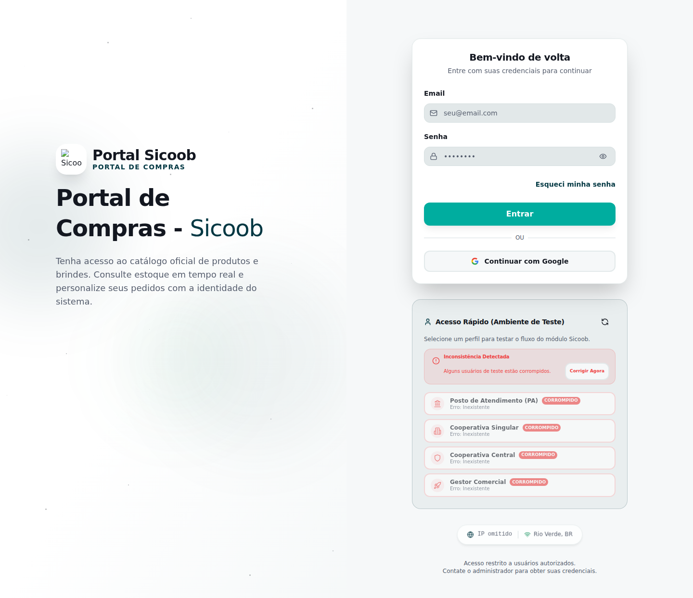
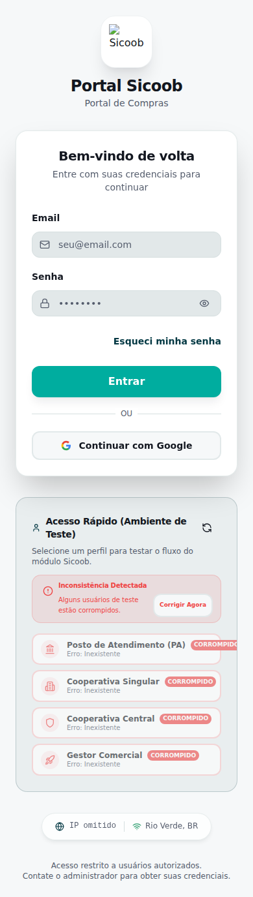

Anexos da análise do portal Sicoob
Referências detalhadas, cobertura e limites da análise. Os documentos registram evidências por arquivo, página ou seção.
Análise dos documentos fornecidos — Portal de Brindes Sicoob
Data da análise: 11/09/2026. Corpus: 13 arquivos úteis, sendo 12 PDFs (298 páginas) e uma planilha Excel. Os arquivos :Zone.Identifier são metadados de transferência do Windows e foram ignorados. A numeração de página abaixo é a do PDF, iniciada em 1; não é a numeração impressa dos cadernos diagramados em páginas duplas.
Os documentos de operação mostram que um portal corporativo reúne aprovação, verba, entrega, nota fiscal, rastreio e atendimento, além de expor produtos. A personalização Sicoob aparece em campanhas e no contexto de marca; a evidência mais direta de compra é uma política do Sicoob Centro, que não pode ser transformada em regra universal do sistema.
1. Conclusões que mudam decisões do projeto
- A maioria dos documentos é histórica. Há material de 2007, 2012, 2013, 2017, 2019–2021 e arquivos cuja publicação não pôde ser datada. Nenhum deles comprova um contrato comercial ou política sistêmica vigente em setembro de 2026.
- Não existe um único comprador Sicoob nestas fontes. A cartilha distingue estrutura sistêmica e local; o manual do Centro define escolhas regionais. O portal precisa preservar autonomia da cooperativa, escopo do PA e aprovação da marca, e não somente trocar a cor de um sistema de vendedores.
- BR Supply deve ser estudado como operação completa. Os manuais demonstram catálogo por usuário, locais autorizados, alçadas, verba, tratamento parcial, documentos, recompra, SAC e aceite. Esses são fundamentos de paridade operacional, não diferenciais exclusivos já demonstrados para Sicoob.
- Regras variam mesmo quando a interface é igual. UFMA e IFRO usam o mesmo padrão visual, mas possuem janelas mensais diferentes; IFSULDEMINAS e Magazine Luiza indicam 30 dias para ocorrência, contra 15 em UFMA/IFRO. Prazos, mínimos e bloqueios precisam ser parâmetros de contrato/cooperativa.
- A maior oportunidade específica é ligar campanha → arte → verba → entrega no evento. Campanha histórica Sicoob, calendário de assembleias, materiais do Instituto e catálogo de brindes mostram as peças dessa jornada. A conexão é uma hipótese de produto fortemente sustentada, não funcionalidade comprovada nas fontes.
- A planilha é um índice de pesquisa. Uma aba, quatro linhas utilizadas, seis células não vazias e cinco links. Ela não é especificação do portal nem contém credenciais.
output.pdf é Magazine Luiza. O arquivo é rasterizado; OCR e visualização identificam um portal BR Supply de outro cliente. ARKnA15FLk5gh10.pdf é o manual UFMA.- Preços não podem ser reutilizados. O catálogo de presentes afirma validade até outubro/2017. Nenhum preço atual, estoque atual ou correspondência entre códigos antigos e o banco existente foi inferido.
2. Método e limites de evidência
Foram lidos README.md e docs/SCOPE_ALIGNMENT.md da worktree antes da produção dos artefatos. Foi executada extração nativa integral dos 12 PDFs, totalizando 577.285 caracteres no resultado bruto; como output.pdf não contém texto útil, todas as suas 20 páginas receberam OCR em português. Os demais PDFs foram inspecionados visualmente em páginas relevantes a identidade, tela, processo, tabela ou contradição. O inventário informa quais páginas foram vistas; as 20 páginas de output.pdf foram vistas. A planilha foi lida integralmente como OOXML, incluindo todas as células não vazias e metadados.
Os achados distinguem conteúdo explícito de implicação proposta para o portal. Data de geração, modificação ou conversão do arquivo não é tratada como vigência normativa. No relatório anual de 2007, todas as seções foram triadas; o aprofundamento foi institucional e não uma auditoria dos números contábeis. OCR de telas pequenas pode errar números e letras; nenhuma decisão de preço, cadastro de pessoa ou contrato foi baseada nesses trechos.
Os manuais UFMA, IFRO e IFSULDEMINAS compartilham telas, exemplos e organização de conteúdo. Foram tratados como uma família de implantação BR Supply, não como três provas independentes de demanda Sicoob. O manual Magalu e o SAPORE ampliam a comparação histórica, mas também não substituem observação de usuários atuais.
Esta frente é documental: não fez login em portais externos, não enviou mensagens, não verificou LinkedIn, não consultou os bancos Supabase e não auditou o código. Essas conclusões devem ser integradas às frentes de pesquisa atual e auditoria técnica, sem se substituir a elas.
3. Inventário, data real e autoridade
| Arquivo |
Instituição / uso |
Páginas |
Data de conteúdo ou proveniência |
Adequação |
| ARKnA15FLk5gh10.pdf |
UFMA; BR Supply |
20 |
Não declarada no conteúdo; PDF gerado em 27/07/2021 |
Histórico; inadequado como regra Sicoob |
| Cartilha-do-Cooperado-janeiro.pdf |
Sicoob Metropolitano; Sicoob Central Unicoob |
37 |
Janeiro de 2019 |
Histórico; princípios úteis, números, contatos, organograma e aplicações exigem atualização |
| Exercício findo em 31 de dezembro de 2007.pdf |
Banco Cooperativo do Brasil — Bancoob |
46 |
Exercício findo em 31/12/2007 |
Histórico remoto; baixa utilidade para decisões atuais de portal |
| MANUAL DO-COOPERADO_ALIANÇA_WEB_REV00.pdf |
Sicoob Aliança; Sicoob Central Unicoob |
28 |
Não declarada no conteúdo; PDF gerado em 31/03/2020 |
Histórico; útil para tom e valores, inadequado para métricas atuais |
| Manual-do-Fornecedor-SICOOB-Centro-1.pdf |
Sicoob Centro |
6 |
Sem vigência declarada; PDF gerado em 12/08/2021 |
Fonte local mais forte sobre compras; confirmar versão antes de parametrizar |
| Opcoes_Brindes_Campanha_SICOOB_Dia_da_Secretaria.pdf |
Campanha identificada como Sicoob; unidade emissora não comprovada |
3 |
Não declarada no corpo; PDF gerado em 09/09/2013 |
Histórico remoto; demonstra ocasião e atributos, não catálogo/estoque atual |
| Portal de Compras SAPORE.pdf |
SAPORE; BR Supply |
13 |
Não declarada no corpo; PDF gerado em 22/05/2012 |
Histórico; relevante ao processo, interface e navegadores obsoletos |
| Presentes Final de Ano - Br Supply.pdf |
BR Supply |
40 |
Campanha 2017, preços válidos até outubro/2017 ou enquanto durar estoque |
Expirado para preço, estoque, códigos, mínimo e SLA |
| manual-avn-brs-v1-2.pdf |
Almoxarifado Virtual Nacional; Central de Compras do Ministério da Economia; BR Supply |
47 |
Sem data de publicação identificável |
Vigência não estabelecida; regras contratuais públicas não se aplicam automaticamente ao Sicoob |
| manual_IFRO.pdf |
IFRO; BR Supply |
20 |
Não declarada no conteúdo; PDF gerado em 27/07/2021 |
Histórico; implantação distinta da UFMA |
| manual_ifsuldeminas.pdf |
Instituto Federal do Sul de Minas Gerais; BR Supply |
18 |
Não declarada no conteúdo; PDF gerado em 26/05/2020 |
Histórico; prazo de ocorrência difere dos manuais UFMA/IFRO |
| output.pdf |
Magazine Luiza; BR Supply |
20 |
Data editorial desconhecida; captura/conversão em 31/07/2022 |
Histórico; não é documento Sicoob e não comprova produto BR Supply atual |
| Portal de Compras - Sicoob.xlsx |
Coleção particular fornecida pelo usuário |
1 aba |
Conteúdo sem data; criado em 31/07/2022 e modificado em 29/12/2025 |
Lista de links; atualização do arquivo não valida os sites nem implica endosso Sicoob |
O JSON de inventário inclui caminho absoluto, hash SHA-256, tamanho, metadados, evidências e limitações por arquivo. Uma alteração de arquivo pode ser identificada pelo hash sem confundir revisões.
4. Leitura detalhada por arquivo
4.1. ARKnA15FLk5gh10.pdf
Identificação: Almoxarifado Virtual da UFMA. Instituição: UFMA; BR Supply.
Data: Não declarada no conteúdo; PDF gerado em 27/07/2021. Base da data: Metadados de criação/modificação, sem prova de vigência contratual em 2026.
Autoridade: Benchmark de outra organização. Histórico; inadequado como regra Sicoob.
- Janela mensal da UFMA — p.5. Evidência: Pedidos e aprovações de 1 a 20; entrega até dia 15 do mês seguinte. Implicação: Permitir calendário configurável por organização e contrato; não fixar esta janela para cooperativas.
- Carrinho com local, verba e prazo — p.8–10. Evidência: Conferência de faturamento, entrega, itens, quantidades, valor total; verba disponível/consumida e previsão de entrega; salvar carrinho e PDF. Implicação: Mostrar destino, orçamento e prazo antes da confirmação; persistir rascunhos por cooperativa/PA.
- Cancelamento antes da aprovação — p.11. Evidência: Cancelamento direto apenas enquanto aguarda aprovação; exige motivo; notificações ao solicitante e aprovadores. Implicação: Definir cancelamento por fase e registrar motivo, ator e evento; para brindes, avaliar adicionalmente liberação da arte/produção.
- Aprovação e devolução ao solicitante — p.12, inspeção visual. Evidência: Tela distingue aprovar, reprovar, devolver ao solicitante, adicionar item e atualizar dados. Implicação: Devolução para ajuste deve ser um estado explícito, diferente de rejeição definitiva.
- Rastreio, ateste e ocorrência — p.14–18. Evidência: Relatórios de pedidos/notas/consumo/preços; rastreio até entrega; p.16 indica 15 dias para ocorrência; p.17 mostra ateste total/parcial e contestação; SAC aceita anexos. Implicação: Modelar recebimento parcial e divergência por item; vincular fotos, notas fiscais e atendimento ao pedido.
Limites específicos: Telas contêm dados de demonstração, como UA São Paulo, valores e prazo de sete dias. A política específica da p.5 prevalece como evidência institucional; não tomar números de mockup como contrato. O texto extraído contém placeholders de logotipo que não aparecem como marca final na visualização.
4.2. Cartilha-do-Cooperado-janeiro.pdf
Identificação: Manual do Cooperado — Sicoob Metropolitano. Instituição: Sicoob Metropolitano; Sicoob Central Unicoob.
Data: Janeiro de 2019. Base da data: Data explícita no expediente, p.36; criação do PDF em 10/04/2019.
Autoridade: Contexto institucional Sicoob, sem política de compras. Histórico; princípios úteis, números, contatos, organograma e aplicações exigem atualização.
- Cooperado e desenvolvimento da comunidade — p.3,6–7,16,19,37. Evidência: O cooperado participa e é tratado como dono; gestão democrática, cooperação, transparência, educação e desenvolvimento comunitário aparecem no material. Implicação: Usar linguagem de cooperativa e cooperado, atendimento próximo e informações claras; evitar reduzir o portal a uma loja genérica.
- Governança sistêmica da marca — p.12–13. Evidência: Documento distingue confederação, centrais, singulares e pontos de atendimento; atribui à confederação diretrizes de comunicação, marketing e uso da marca. Implicação: Separar identidade sistêmica de personalização local; manter biblioteca de artes com versão e aprovação institucional.
- Assembleias e calendário cooperativista — p.11 e p.14. Evidência: Datas do cooperativismo e eventos AGO, AGE e pré-assembleias; AGO descrita nos primeiros quatro meses, com participação de delegados. Implicação: Criar campanhas por assembleia e evento, com data desejada e janela de produção; confirmar calendário de cada singular.
- Educação, voluntariado e interesse comunitário — p.17–18. Evidência: Instituto Sicoob, Cooperjovem, cooperativas mirins, concurso cultural, educação financeira/ambiental e voluntariado. Implicação: Curadoria por objetivo educativo/social, kits por público e evidência verificável de sustentabilidade.
- Segmentação local de relacionamento — p.15, p.33. Evidência: Menciona espaços para empreendedor, moda, mulher e jovens e rede em PR/SP; a p.33 distingue futuras inaugurações de 2019. Implicação: Segmentar campanhas por objetivo e contexto da cooperativa; não transformar rede histórica em cadastro atual de PAs.
- Áreas de planejamento, marketing e eventos — p.36. Evidência: Expediente atribui produção à Área de Planejamento e Desenvolvimento do Metropolitano e Comunicação, Marketing e Eventos da Central Unicoob. Implicação: Áreas são pistas documentais para entrevistas; nomes do expediente não comprovam cargos atuais.
Limites específicos: São 37 páginas de PDF contendo páginas editoriais duplas (por exemplo PDF p.12 = páginas impressas 22–23); referências deste relatório usam página do PDF. Não é manual oficial vigente de identidade visual; não contém especificação confiável de tokens digitais ou direitos de aplicação da marca. Inclui produtos e contatos de 2019; não publicar como informação financeira ou operacional atual.
4.3. Exercício findo em 31 de dezembro de 2007.pdf
Identificação: Relatório Anual 2007. Instituição: Banco Cooperativo do Brasil — Bancoob.
Data: Exercício findo em 31/12/2007. Base da data: Título interno, demonstrações p.29 e parecer p.41; geração 11/04/2008, modificação 15/06/2012.
Autoridade: Contexto histórico financeiro/institucional. Histórico remoto; baixa utilidade para decisões atuais de portal.
- Bancoob e cooperativas acionistas em 2007 — p.7–8,43–45. Evidência: Retrato institucional, organograma e relação de centrais acionistas; indicadores explicitamente referentes àquele exercício. Implicação: Preservar apenas contexto histórico; não importar dirigentes, telefones, número de cooperativas ou estrutura de 2007 para o cadastro atual.
- Estratégia Bancoob 2008–2010 — p.9–11. Evidência: Mapa estratégico de qualidade, competitividade, força da marca, processos, governança, capacitação e responsabilidade socioambiental. Implicação: Há afinidade conceitual com eficiência e transparência; não é fonte de requisitos atuais de compras.
- Demonstrações e notas históricas — p.24–41. Evidência: Relatório da administração, demonstrações financeiras, notas explicativas e parecer dos auditores. Implicação: Não usar números financeiros históricos para TAM, orçamento de brindes, capacidade de gasto ou perfil de comprador em 2026.
- Cabeçalho temporal divergente — p.31–40. Evidência: Notas explicativas exibem cabeçalho 2006 e 2005, enquanto várias tabelas e o parecer tratam de 2007 e 2006. Implicação: Priorizar o exercício comprovado pelo documento e registrar inconsistência editorial; não presumir atualização do conteúdo pela data do arquivo.
Limites específicos: Extração de texto em todas as 46 páginas e triagem de todas as seções; aprofundamento concentrado no contexto institucional. Não foi realizada auditoria contábil nem validação dos demonstrativos. Documento bilíngue, em páginas duplas, com extração entrelaçada de colunas; evitar citar transcrições longas sem consulta visual.
4.4. MANUAL DO-COOPERADO_ALIANÇA_WEB_REV00.pdf
Identificação: Manual do Cooperado — Uma cooperativa para chamar de minha. Instituição: Sicoob Aliança; Sicoob Central Unicoob.
Data: Não declarada no conteúdo; PDF gerado em 31/03/2020. Base da data: Metadados de criação/modificação.
Autoridade: Contexto institucional e linguagem Sicoob. Histórico; útil para tom e valores, inadequado para métricas atuais.
- Pertencimento e transformação comunitária — p.1,6,8–9,24. Evidência: Apresenta vínculo de pertencimento, sociedade de pessoas, gestão democrática e desenvolvimento local. Implicação: Mensagem do portal pode associar cada campanha à finalidade para cooperados e comunidade.
- Princípios e valores cooperativistas — p.11–15. Evidência: Ética, transparência, respeito, cooperativismo, direitos/deveres e os sete princípios; autonomia e interesse comunitário. Implicação: Tornar escolhas de compra e aprovações explicáveis; suportar autonomia da singular dentro da governança de marca.
- Eixos do Instituto Sicoob no documento — p.14–17. Evidência: Cooperativismo/empreendedorismo, cidadania financeira e desenvolvimento sustentável. Implicação: Criar coleções temáticas e kits educativos com descrição de uso, evitando alegação ambiental sem comprovação.
- Expressão visual do Sicoob Aliança — p.1,6,13,15, inspeção visual. Evidência: Combina verde escuro, turquesa, verde-limão, branco, formas orgânicas e triângulos; há roxo em títulos/capa. Implicação: Usar como referência de expressão histórica; escolher paleta e tipografia final somente a partir do manual oficial vigente.
Limites específicos: Números da p.5 e informações de canais/produtos p.18–25 pertencem ao contexto do arquivo; não foram verificados como atuais. Documento apresenta a cooperativa Aliança; sua linguagem e campanhas não implicam padronização obrigatória para todas as singulares.
4.5. Manual-do-Fornecedor-SICOOB-Centro-1.pdf
Identificação: Manual do Fornecedor Sicoob Centro. Instituição: Sicoob Centro.
Data: Sem vigência declarada; PDF gerado em 12/08/2021. Base da data: Metadados de criação; documento não identifica revisão ou data de vigência.
Autoridade: Política de uma cooperativa Sicoob. Fonte local mais forte sobre compras; confirmar versão antes de parametrizar.
- Preferência por cooperado, PME e economia regional — p.2. Evidência: Preferência de até 5% para empresas cooperadas e 5% para pequenas/microempresas de Rondônia, cumuláveis até 10%; desempate considera porte, reciprocidade e tempo de filiação. Implicação: Representar qualificações e critérios configuráveis por cooperativa; não aplicar percentuais como regra de todo Sicoob.
- Cotação registrada e prazo de resposta — p.3. Evidência: Cotações por e-mail para registro; retorno em três dias úteis; comunicação de aprovação/reprovação a todos participantes; aproveitamento de orçamento anterior até 90 dias. Implicação: Versionar propostas, registrar validade e eventos de decisão; permitir prazo e vigência por organização, sem importar limites históricos automaticamente.
- Conteúdo mínimo da proposta — p.3. Evidência: Proposta inclui quantidade, modelo, marca, preço, garantia, forma de pagamento, prazo de retorno e previsão de entrega. Implicação: PDF/link comercial deve conter especificação completa, preço discriminado, validade, pagamento, entrega e condições de personalização.
- Qualificação e regularidade do fornecedor — p.3–4. Evidência: Regularidade municipal, estadual, federal e trabalhista; critérios técnicos, profissionais, éticos, qualidade, localização, associação e sustentabilidade. Implicação: Disponibilizar dossiê comercial e documentos com validade e acesso controlado; evitar exigir dados pessoais não necessários à operação.
- Pontuação no ato da compra — p.5. Evidência: Produto sustentável e menor preço recebem 20 pontos cada; cooperativa, certificações/declaração ambiental e associado ativo recebem 10 cada; outros seis critérios de cinco pontos completam a tabela. Implicação: Permitir comparar custo, conformidade, prazo e evidência ambiental; nenhum selo deve ser atribuído automaticamente por material ou nome do item.
- Avaliação anual do fornecedor — p.6. Evidência: Fornecedores com pelo menos cinco compras anuais são avaliados; qualidade material/serviço soma 40%, relacionamento 20% e outros quatro itens 10% cada; mínimo três estrelas. Implicação: Conectar histórico de prazo, qualidade, atendimento e documentação a avaliação do fornecedor; ponderação deve ser configurável.
- Condição de pagamento documentada — p.3. Evidência: Pagamento no prazo acordado; compra à vista descrita como D+5 dias úteis após apresentação de nota fiscal ou comprovantes. Implicação: Explicitar condição acordada na proposta/pedido; não presumir cartão, Pix imediato ou D+5 universal.
Limites específicos: O emitente é Sicoob Centro, não Confederação/Centro Cooperativo Sicoob. A política inclui critérios regionais de Rondônia. Não há no arquivo autorização para aplicar regras a outras cooperativas, catálogo homologado de brindes, API, SSO ou política sistêmica de presente.
Detalhe da pontuação do Centro (p.5): produto sustentável 20; menor preço 20; fornecedor cooperativa 10; certificação/declaração de sustentabilidade 10; associado ativo 10; reciprocidade 5; empresa local 5; selo de qualidade 5; garantia adicional 5; flexibilidade 5; recomendação regional 5. Total: 100. A comparação é documental e local. Não há comprovação de que todos os atributos devam ser coletados dos clientes do portal, nem de que devam ordenar automaticamente o catálogo.
Avaliação anual (p.6): qualidade do material e do serviço somam 40% (20% cada se fornece ambos); relacionamento 20%; responsabilidade socioambiental, inovação, pós-venda e consultas cadastrais 10% cada. A escala de estrelas é 0–30%=1, 31–60%=2, 61–80%=3, 81–90%=4, 91–100%=5. A política demanda mínimo de três estrelas para fornecedores avaliados, mas não informa política sistêmica de exclusão automática.
4.6. Opcoes_Brindes_Campanha_SICOOB_Dia_da_Secretaria.pdf
Identificação: Opções Campanha Sicoob Dia da Secretária. Instituição: Campanha identificada como Sicoob; unidade emissora não comprovada.
Data: Não declarada no corpo; PDF gerado em 09/09/2013. Base da data: Metadados PowerPoint.
Autoridade: Catálogo histórico de campanha Sicoob. Histórico remoto; demonstra ocasião e atributos, não catálogo/estoque atual.
- Campanha de relacionamento por ocasião — p.1–3. Evidência: Seis opções: nécessaire, porta-bolsa, porta-batom, espelho, kit higiene bucal e porta-cartões. Implicação: Organizar descoberta por campanha/objetivo e permitir kit por faixa de investimento sem reproduzir estereótipos como regra do público.
- Ficha de brinde e personalização — p.2–3. Evidência: Códigos, materiais, aplicações, embalagem, quantidade por pacote; baixo-relevo, gravação e aplicação monocromática. Implicação: Separar produto, variante, unidade comercial, técnica, área de personalização, embalagem e conteúdo do kit.
- Unidade versus pacote — p.2. Evidência: Porta-batom apresentado em pacote de cinco unidades; outros itens em unidade. Implicação: Exibir unidade de compra e quantidade total entregável; validar múltiplos e conversões no orçamento.
- Descrições que exigem saneamento — p.2. Evidência: Nécessaire intitulada em nylon, mas diferenciais citam PVC transparente. Implicação: Normalizar atributos com fonte de produto verificável e sinalizar conflito em vez de inventar composição.
Limites específicos: Não há preços neste PDF. Códigos 024xxx não foram associados aos IDs do banco de produtos. Uso antigo do logo não constitui licença ou aprovação da personalização no novo portal.
4.7. Portal de Compras SAPORE.pdf
Identificação: Portal de Compras SAPORE — Guia de início rápido. Instituição: SAPORE; BR Supply.
Data: Não declarada no corpo; PDF gerado em 22/05/2012. Base da data: Metadados de criação.
Autoridade: Benchmark histórico de cliente BR Supply. Histórico; relevante ao processo, interface e navegadores obsoletos.
- Catálogo por cliente/usuário e preço contratado — p.4. Evidência: Catálogos disponíveis variam por cliente/usuário; indicador de preço contratado. Implicação: Definir visibilidade comercial e contratos por cooperativa, sem confundir preço consultado no banco com preço final da proposta.
- Locais de entrega controlados pelo gestor — p.5–7. Evidência: Gestor define locais autorizados; carrinho confirma destino; restrições de verba e pedido mínimo podem ser parametrizadas por usuário/local. Implicação: Associar usuário a organizações/PAs e endereços permitidos; validar no servidor o contexto escolhido.
- Uma ou mais alçadas de aprovação — p.8–10. Evidência: Número de aprovadores depende da parametrização do gestor; aprovador pode alterar itens/quantidades; histórico e notificações registram mudanças; rejeição exige motivo. Implicação: Separar solicitação, aprovação financeira e aprovação de arte; alterações relevantes invalidam aprovações anteriores.
- Faturamento e atendimento parciais — p.9. Evidência: Estados distinguem liberação comercial, integração WMS, separação, faturamento, atendimento total e parcial; parcial pode gerar duas notas. Implicação: Modelar entregas/notas por remessa e quantidades atendidas por item; status global sozinho é insuficiente.
- Recompra e programação — p.6 e p.9. Evidência: Salvar carrinho, programação de repetição e copiar itens de pedido para novo carrinho. Implicação: Recomprar com revalidação de estoque, preço, prazo e versão da arte.
- Conferência e divergência na entrega — p.11–12. Evidência: NF, consumo e rastreio; checklist de volumes, especificações, quantidades e integridade; documentação de divergência. Implicação: Oferecer recebimento guiado por item, evidência fotográfica e atendimento vinculado.
Limites específicos: Regras são da implantação SAPORE de 2012. Referências a IE6, Firefox 3.6 e tarja SSL-EV não são requisitos técnicos atuais. O documento não comprova a existência atual das mesmas telas ou integrações no BR Supply.
4.8. Presentes Final de Ano - Br Supply.pdf
Identificação: Presentes Final de Ano — catálogo 2017. Instituição: BR Supply.
Data: Campanha 2017, preços válidos até outubro/2017 ou enquanto durar estoque. Base da data: Título do arquivo-fonte nos metadados e validade explícita p.39; criação 31/07/2017.
Autoridade: Benchmark histórico de brindes personalizados. Expirado para preço, estoque, códigos, mínimo e SLA.
- Curadoria por ocasião e investimento — p.3–4,36–37. Evidência: Distingue presentes corporativos e Natal; resumo ordenado por investimento. Implicação: Criar coleções por ocasião, público e orçamento, sempre recalculadas a partir do catálogo autorizado atual.
- Personalização de produto e embalagem — p.6–27,30–35. Evidência: Itens apresentam foto, código, descrição, cores, mínimo e logomarca; alguns incluem embalagem temática, cartão e kits alimentícios. Implicação: Precificar composição completa: produto + técnica + preparação + embalagem + montagem + frete; mostrar inclusão/exclusão.
- Quantidade mínima e variantes — p.6–27,34–37. Evidência: Exemplos históricos mostram mínimos de 150, 200, 500 e 1.000 unidades, tamanhos P/M/G/GG e cores. Implicação: Modelar mínimo e múltiplo por produto/técnica/fornecedor; não copiar quantidades históricas para o banco atual.
- Prazo de produção, processamento e transporte — p.38. Evidência: Tabela separa produção de 25 dias, processamento de um dia e transporte regional, resultando em 31 a 41 dias no catálogo. Implicação: Mostrar composição do prazo e dependência de arte aprovada; estimar atendimento antes da data do evento com premissas atuais.
- Validade comercial encerrada em outubro de 2017 — p.39. Evidência: Validade dos preços termina em outubro/2017 ou término do estoque. Implicação: Impedir ingestão como tabela comercial vigente e jamais usar os valores como referência de mercado atual.
- Inconsistência de descrição e código — p.20,25,37. Evidência: Código 100016 é conjunto champanheira com espumante na p.20, mas o resumo p.37 o rotula como caixa de som; caixa de som na p.25 usa 100021. Implicação: Reconciliar por identificador e fonte; uma importação textual cega herdaria erro de produto.
Limites específicos: É catálogo genérico BR Supply, sem prova de acordo comercial com Sicoob ou execução das ofertas em 2026. Fotografias e modelos de arte são referências de análise, sem reprodução de assets no código.
4.9. manual-avn-brs-v1-2.pdf
Identificação: Manual do Usuário BRSUPPLY versão 1.2 — AVN. Instituição: Almoxarifado Virtual Nacional; Central de Compras do Ministério da Economia; BR Supply.
Data: Sem data de publicação identificável. Base da data: PDF não possui CreationDate/ModDate; versão 1.2 e menção institucional não permitem datar com precisão.
Autoridade: Benchmark de contratação pública. Vigência não estabelecida; regras contratuais públicas não se aplicam automaticamente ao Sicoob.
- AVN exclui produtos personalizados — p.4 e p.16. Evidência: Material de consumo administrativo; exclui permanentes, personalizados, copa e limpeza. Implicação: Aproveitar governança de pedidos; não importar escopo de catálogo que exclui justamente brindes personalizados.
- Solicitante, aprovador, gestor setorial e administrador — p.5–6,19–20,41–44. Evidência: Papéis têm responsabilidades diferentes; solicitante/aprovador podem atuar em mais de uma unidade; hierarquia consultável. Implicação: Representar permissões por ação e associação usuário-organização; papel do fornecedor é distinto do gestor da cooperativa.
- Mínimos e janelas regionais do AVN — p.7–8. Evidência: Mínimos de R$500 Norte/Nordeste e R$300 demais; datas de entrega dependem de quinzena de aprovação e região. Implicação: Configurar regras comerciais e calendários quando contratados; não adotar valores ou quinzenas como padrão Sicoob.
- Ateste, conteste e entrega corretiva — p.9–15 e p.29–38. Evidência: Solicitante contesta em três dias úteis; aprovador tem janela de cinco; fornecedor responde em dois; contestação pode escalar ao administrador e gerar entrega corretiva. Implicação: Separar entrega física de aceite e conclusão; registrar ocorrência por item com responsável, prazo e reentrega.
- Bloqueio por pendência de ateste — p.9,33,36. Evidência: Unidades do aprovador podem ficar bloqueadas para novos pedidos até regularização da pendência. Implicação: Não habilitar bloqueio em cascata sem regra de negócio explicitamente validada; exibir pendências e seus efeitos com clareza.
- Revisão e justificativa de reprovação — p.24–28. Evidência: Aprovador pode alterar, incluir ou excluir; remover único item cancela pedido; recusa exige justificativa e aviso eletrônico. Implicação: Exigir trilha de versão e reapresentação do total após alterações; evitar remoção silenciosa de item aprovado.
- Hierarquia e exportação de dados — p.34,39–46. Evidência: Acompanhamento de etapas, relatório de hierarquia e exportação inclusive XLSX. Implicação: Fornecer exportação e visibilidade por escopo de organização, com filtros de PA/campanha/período.
Limites específicos: CPF/SIAPE/SIORG e CATMAT são requisitos daquele sistema público; não importar para o cadastro Sicoob. Não há evidência de relacionamento direto deste AVN com cooperativas Sicoob.
4.10. manual_IFRO.pdf
Identificação: Almoxarifado Virtual do IFRO. Instituição: IFRO; BR Supply.
Data: Não declarada no conteúdo; PDF gerado em 27/07/2021. Base da data: Metadados de criação/modificação.
Autoridade: Benchmark de outra organização. Histórico; implantação distinta da UFMA.
- Janela mensal do IFRO — p.5. Evidência: Pedidos/aprovação de 1 a 10; entrega até dia 30 do mesmo mês. Implicação: A divergência em relação à UFMA prova necessidade de política por contrato, mesmo com telas quase iguais.
- Fluxo completo de compra IFRO — p.7–15. Evidência: Catálogo, carrinho, conferência, PDF, cancelamento com motivo antes de aprovação, aprovar/reprovar/devolver, relatórios e rastreio. Implicação: Benchmark funcional de paridade operacional; não confundir o estilo verde do IFRO com identidade Sicoob.
- Prazo de ocorrência e atendimento IFRO — p.16–18. Evidência: Ocorrências em até 15 dias; ateste de nota; SAC com tipo de ocorrência, ajuda contextual e anexos. Implicação: Anexos e ajuda contextual reduzem retrabalho; prazo de ocorrência deve vir de contrato vigente.
Limites específicos: Telas reaproveitam dados e valores de demonstração do manual UFMA; não são medições reais. Cliente é Instituto Federal de Rondônia, não Sicoob Centro apesar da coincidência geográfica.
4.11. manual_ifsuldeminas.pdf
Identificação: Portal de Suprimentos IFSULDEMINAS. Instituição: Instituto Federal do Sul de Minas Gerais; BR Supply.
Data: Não declarada no conteúdo; PDF gerado em 26/05/2020. Base da data: Metadados de criação/modificação.
Autoridade: Benchmark de outra organização. Histórico; prazo de ocorrência difere dos manuais UFMA/IFRO.
- Carrinho contextual e aprovação IFSULDEMINAS — p.5–10. Evidência: Busca, quantidade, local de entrega, verba, conferência, PDF e aprovação/retorno ao solicitante. Implicação: Priorizar tarefa de compra com contexto fixado; interface precisa mostrar organização/PA ativo em toda a jornada.
- Relatórios, rastreio e atendimento — p.11–16. Evidência: Relatórios de pedidos/NF/consumo/preço, rastreio, recebimento e SAC com anexos. Implicação: Dar autonomia ao comprador para consultar status e documentos sem depender de contato manual.
- Ocorrência em 30 dias no IFSULDEMINAS — p.14. Evidência: Texto indica atendimento de ocorrências dentro de 30 dias após entrega, com ressalva no conhecimento. Implicação: Os 30 dias conflitam com 15 dias UFMA/IFRO; preservar a regra como configuração institucional, não norma universal.
Limites específicos: Documento não define política Sicoob. Algumas páginas têm texto importante incorporado em imagem. Seu sumário associa aprovação à p.7, mas a seção visual de aprovação aparece na p.10; usar página real do PDF como evidência.
4.12. output.pdf
Identificação: Portal de Suprimentos Magazine Luiza. Instituição: Magazine Luiza; BR Supply.
Data: Data editorial desconhecida; captura/conversão em 31/07/2022. Base da data: Metadados identificam yumpudownload.com; tela de rastreio p.15 contém exemplo de 05/05/2017, que não data a publicação.
Autoridade: Benchmark de outra organização, arquivo rasterizado. Histórico; não é documento Sicoob e não comprova produto BR Supply atual.
- Portal de Suprimentos Magazine Luiza — p.1,5,7,20, inspeção visual/OCR. Evidência: Capa, introdução e endereço de acesso identificam Magazine Luiza; contracapa BR Supply. Implicação: Renomear descritivamente no catálogo de referências; não tratar output.pdf como arquivo Sicoob.
- Janela de pedidos Magalu — p.6, inspeção visual/OCR. Evidência: Pedido 1–10, aprovação 11–15 e distribuição 19–30; quadro separado indica SLA matriz/CD Canoas de cinco dias úteis. Implicação: Suportar calendários e exceções por destino quando contratados; não inferir abrangência nacional da regra específica do mapa.
- Verbas, carrinhos e entregas programadas — p.9–14, inspeção visual/OCR. Evidência: Saldo de verba, salvar carrinho, programação, revisão de local, histórico de login, pedidos e relatórios. Implicação: Comprador precisa ver contexto financeiro e reutilizar configuração com atualização de preço/estoque.
- Atendimento com evidência e recebimento — p.15–18, inspeção visual/OCR. Evidência: Rastreio, recebimento/recusa, ocorrência em 30 dias, solicitações de boleto e prioridade; fotos de avaria e etiquetas. Implicação: Oferecer fluxo de pós-venda ligado a pedido/NF/itens; registrar prioridade por data de evento e justificativa.
Limites específicos: OCR tem erros em números, e-mails e telas pequenas; o conteúdo de maior relevância foi confirmado visualmente. A data de conversão não é a data de publicação; o exemplo de 2017 não sustenta vigência das regras.
4.13. Portal de Compras - Sicoob.xlsx
Identificação: Portal de Compras - Sicoob. Instituição: Coleção particular fornecida pelo usuário.
Data: Conteúdo sem data; criado em 31/07/2022 e modificado em 29/12/2025. Base da data: docProps/core.xml: created 2022-07-31T14:03:09Z; modified 2025-12-29T21:29:42Z.
Autoridade: Índice de referências de benchmark. Lista de links; atualização do arquivo não valida os sites nem implica endosso Sicoob.
- Cinco links de benchmark — Planilha1!A1:A4 e B2. Evidência: Shopcoopera, página Personalize da BR Supply, login Supply Manager, canal YouTube BR Supply e Oceano B2B. Implicação: Usar como trilha de pesquisa pública; não confundir referência salva com fonte atualmente verificada.
- Anotação sobre acesso ao Supply Manager — Planilha1!C2. Evidência: A célula contém uma intenção de obter acesso para estudar ideias/padrões. Implicação: Tratar como conteúdo documental, sem credenciais, autorização de acesso restrito ou instrução para contornar login.
Limites específicos: Não há requisitos detalhados, produtos, preços, quantidades, segmentação de compradores ou credenciais na planilha. Nenhum login ou contato com terceiros foi realizado nesta análise.
| Célula |
Conteúdo |
| Planilha1!A1 |
https://www.shopcoopera.com.br/ |
| Planilha1!A2 |
https://www.brsupply.com.br/supply-manager-personalize/ |
| Planilha1!B2 |
https://www.supplymanager.com.br/manager/Login/Index?ReturnUrl=%2Fmanager |
| Planilha1!C2 |
Conseguir acesso ao Supply Manager para copiar ideias e padrões |
| Planilha1!A3 |
https://www.youtube.com/c/BrSupplySuprimentosCorporativos |
| Planilha1!A4 |
https://www.oceanob2b.com/ |
5. O que os documentos revelam sobre compradores e marketing
As linhas abaixo descrevem funções e tarefas observadas ou inferidas, sem atribuir idade, gênero, renda, senioridade, poder de compra ou comportamento pessoal a indivíduos. Nenhum nome histórico é apresentado como comprador atual.
| Papel de trabalho |
Evidência documental |
Trabalho que o portal deve facilitar |
Validação necessária |
| Compras/administrativo da singular |
Manual Centro p.2–6 |
Obter proposta completa, comparar condições, documentar decisão e consultar fornecedor |
Fluxo e regras da cooperativa piloto; quem efetivamente emite pedido e contrata |
| Marketing, comunicação e eventos |
Cartilha Metropolitano p.12,14,36; campanha Secretária p.1–3 |
Selecionar itens para objetivo e público, controlar arte, data do evento e orçamento |
Quem aprova marca/campanha; autonomia local; política de distribuição de brindes |
| Solicitante local/PA |
Estrutura na Cartilha p.12; analogia de perfis AVN p.5–6 |
Solicitar campanha/kit, indicar destino, acompanhar situação e receber |
Existência e permissão desse papel em cada singular; não está prescrita pelo material Sicoob |
| Aprovador de verba/gestor |
SAPORE p.7–10; analogia de UFMA/IFRO p.12 |
Avaliar saldo, justificativa, prazo e diferenças da versão; aprovar ou devolver |
Alçadas reais por valor, centro de custo, campanha, substituição e impedimentos |
| Operação do fornecedor |
Catálogo BR Supply p.38; manuais de rastreio e SAC |
Validar viabilidade, preço, arte, produção e remessas |
Sistema operacional que confirma estoque e reserva, transportadoras e emissão de NF |
| Responsável pelo recebimento |
AVN p.9–15 e 29–38; Magazine Luiza p.16–18 |
Conferir volume/itens, registrar aceite ou divergência, anexar comprovantes |
Quem recebe no PA, prazos contratados e fluxo de correção |
| Gestor sistêmico ou da central |
Cartilha p.12–13 |
Governar marca e consultar agregados quando autorizado |
Compartilhamento de dados entre pessoas jurídicas e limites de acesso |
O expediente do Metropolitano (p.36, janeiro/2019) oferece pistas históricas para pesquisa profissional: Planejamento e Desenvolvimento — Daniela Parkuts, Kelly Cristina Tiago, Luciana Pizaia; Comunicação, Marketing e Eventos da Central Unicoob — Deborah Busko, Francyne Sanches, Jackelyne Brites e Júlio Dourado. São créditos de publicação antiga, não uma lista validada de decisores ou contatos comerciais. O material não demonstra que tenham comprado brindes. Não foram coletados contatos privados ou contatadas essas pessoas.
Há evidência de mais de uma finalidade para os brindes: relacionamento com cooperados, assembleias, campanhas de data, ações internas, educação e comunidade. Não há evidência suficiente para ranquear frequência ou gasto por finalidade. Uma descoberta inicial pode testar essas necessidades usando entrevistas por papel e pedidos reais anonimizados, em lugar de atribuir uma persona única a todo o Sicoob.
6. Marca e experiência: o que aproveitar e o que confirmar
A Cartilha do Metropolitano (capa e p.3,9,20,34) usa base verde escura, turquesa, verde-limão e branco, com ilustração linear de pessoas e objetos. O manual Aliança (p.1,6,13,15) explora pertencimento, formas orgânicas e variação de cor; o Manual Centro (p.1,5–6) usa hierarquia informacional mais administrativa. A campanha Secretária (p.1–3) aplica triângulos e marca nos produtos. A semelhança é uma referência visual histórica consistente; a variação confirma que cor isolada não define um sistema de design vigente.
Direção proposta: fundo claro para leitura de produto e preços, verde escuro para hierarquia principal, turquesa como cor de apoio, verde-limão em destaque pontual, fotos de produto com área de marca visível e linguagem próxima. Os códigos exatos de cor, fontes, área de proteção, redução mínima, combinações proibidas e assinaturas por singular devem vir da fonte oficial vigente. Não foram amostrados valores HEX de PDFs como se fossem norma.
O portal deve tornar visíveis cooperativa e PA ativos, finalidade da campanha, destino, data desejada e situação de orçamento. A diferenciação por Sicoob vem do fluxo e dos dados, além da aparência. A marca de uma cooperativa aplicada no kit não pode ser substituída automaticamente por logo genérico quando faltar a arte local; é uma pendência de aprovação explícita.
7. Benchmark BR Supply: paridade e diferenciação proposta
| Capacidade observada |
Evidência |
Decisão para o portal Sicoob |
| Catálogo por cliente/usuário e indicação de preço contratado |
SAPORE p.4 |
Paridade: visibilidade por contrato/cooperativa e preço claramente contextualizado |
| Destinos autorizados e verba no carrinho |
SAPORE p.5–7; UFMA/IFRO p.8 |
Paridade: cooperativa/PA, centro de custo e saldo na solicitação |
| Alçadas, justificativa e mudanças do aprovador |
SAPORE p.8–10; AVN p.24–28 |
Paridade: aprovação auditável; melhorar visualização das diferenças e devolução para ajuste |
| Salvar carrinho, copiar pedido e programar entrega |
SAPORE p.6,9; AVN p.21–23; Magalu p.13 |
Paridade: rascunho e recompra revalidados; recorrência depois de política confirmada |
| Rastreio, NF, faturamento e atendimento parcial |
SAPORE p.9–12; UFMA p.14–17 |
Paridade: remessas/NFs e recebido/pendente por item |
| SAC com ajuda, tipo de ocorrência e foto |
IFRO p.18; IFSULDEMINAS p.16; Magalu p.18 |
Paridade: caso ligado ao pedido, com prova e responsável |
| Catálogo por ocasião, quantidade mínima e embalagem |
Presentes Final de Ano p.3–4,6–37 |
Paridade: curadoria e preço completo; usar somente dados atuais autorizados |
| Produção e transporte separados |
Presentes Final de Ano p.38 |
Melhorar: simular chegada antes do evento, com prazo de aprovação da arte explícito |
| Arte institucional Sicoob e contexto comunitário |
Campanha Secretária p.1–3; Cartilha p.11–18 |
Diferenciação proposta: biblioteca de artes homologadas, campanhas cooperativistas e kits por objetivo |
| Qualificação e sustentabilidade documentada |
Manual Centro p.3–6 |
Diferenciação proposta: mostrar evidências de materiais/certificações e dossiê comercial quando relevante |
Os documentos demonstram capacidades históricas; não permitem afirmar lacunas da versão atual do concorrente. Portanto, termos como “melhor que BR Supply” só devem ser usados após testar a experiência atual e medir tarefas equivalentes. A superioridade proposta aqui é uma hipótese de entrega e validação.
8. Requisitos derivados e critérios de aceite
Prioridade P0 = base para piloto transacional; P1 = diferenciação e expansão após base validada; P2 = exploração posterior. “Derivado” significa recomendação desta análise, não cláusula oficial Sicoob.
| ID |
Prioridade |
Requisito derivado |
Critério de aceite verificável |
Fonte documental |
| DOC-01 |
P0 |
Contexto explícito de cooperativa/PA |
Trocar PA muda destinos e permissões permitidos; pedido mantém origem histórica; servidor rejeita acesso cruzado |
Cartilha p.12; SAPORE p.5; AVN p.19–20 |
| DOC-02 |
P0 |
Papel por ação, com aprovação independente |
Solicitante não aprova além da alçada; gestor só vê organizações autorizadas; substituições ficam registradas |
SAPORE p.10; AVN p.5–6 |
| DOC-03 |
P0 |
Proposta comercial completa |
Quantidade, variante, personalização, embalagem, valores, garantia, pagamento, validade e entrega constam do orçamento exportado |
Manual Centro p.3; catálogo 2017 p.6–38 |
| DOC-04 |
P0 |
Unidade, múltiplo e mínimo comercial |
Pacote de cinco mostra unidades entregues corretamente; mínimo é específico da técnica/fornecedor; erro não cria pedido |
Secretária p.2; catálogo p.34–37 |
| DOC-05 |
P0 |
Verba com estado auditável |
Total e comprometimento apresentados na solicitação; aprovação/rejeição/cancelamento têm efeitos consistentes e sem dupla contabilização |
SAPORE p.7–10; UFMA p.8 |
| DOC-06 |
P0 |
Versão de pedido e decisão |
Mudança de item, arte, quantidade, valor ou destino cria revisão, mostra diferenças e aplica política de reaprovação |
SAPORE p.8–10; AVN p.25–28 |
| DOC-07 |
P0 |
Aprovação de arte distinta de verba |
Produção só é liberada com arte identificada e aprovada, responsável e data; mockup gerado não equivale a aprovação |
Secretária p.2–3; Cartilha p.12; derivação de risco de personalização |
| DOC-08 |
P0 |
Prazo ligado à data do evento |
Exibir aprovação da arte + produção + processamento + transporte e sinalizar quando data desejada não é viável |
Catálogo p.38; Cartilha p.14 |
| DOC-09 |
P0 |
Estados claros de solicitação a recebimento |
Cada transição tem ator, data e motivo; distinguir entregue, recebido com pendência e concluído |
AVN p.9–15,39–40; manuais UFMA/IFRO p.15–17 |
| DOC-10 |
P0 |
Entrega e nota parcial |
Dois faturamentos/remessas não duplicam o pedido; totais por item conciliam pedido, entregue, recebido e corrigido |
SAPORE p.9; UFMA p.17 visual |
| DOC-11 |
P0 |
Cancelamento e devolução para ajuste |
Cancelamento informa efeitos e motivo; devolução preserva histórico e permite corrigir; produção iniciada segue regra específica validada |
UFMA/IFRO p.11–12 |
| DOC-12 |
P0 |
Atendimento ligado ao pedido |
Solicitação recebe identificador, tipo, itens, anexos e histórico; usuário acompanha resposta e correção |
IFRO p.18; Magalu p.18 |
| DOC-13 |
P0 |
Regras por organização/contrato |
Janelas e prazos de duas organizações coexistem sem alterar uma à outra; nenhuma regra de órgão público é padrão global |
UFMA p.5; IFRO p.5; IFSULDEMINAS p.14 |
| DOC-14 |
P0 |
Integridade do catálogo e origem do dado |
Cada preço/estoque tem fonte e momento de consulta; indisponível não vira zero; código antigo não gera correspondência automática |
Erros Secretária p.2 e catálogo p.20/25/37; instrução do usuário sobre banco somente consulta |
| DOC-15 |
P1 |
Biblioteca de marca e campanha |
Arte tem titular, cooperativa, versão, usos e estado de aprovação; usuário encontra campanhas permitidas |
Cartilha p.12–18; Aliança p.13–17 |
| DOC-16 |
P1 |
Curadoria por objetivo e público |
Filtros por ocasião, orçamento, prazo, sustentabilidade comprovada e público produzem opções viáveis |
Catálogo p.3–4; Secretária p.1–3; Manual Centro p.4–5 |
| DOC-17 |
P1 |
Dossiê de fornecedor |
Documento mostra emissor, validade e acesso permitido; declaração não vira certificação independente |
Manual Centro p.3–6 |
| DOC-18 |
P1 |
Recompra sem reutilizar promessa expirada |
Repetir pedido cria rascunho e reconsulta estoque/preço/prazo; arte antiga requer validade de uso |
SAPORE p.6,9; AVN p.23 |
| DOC-19 |
P1 |
Relatórios de consumo e desempenho |
Exportação por campanha/PA/período concilia totais com pedidos, inclusive cancelados e parciais |
SAPORE p.11; AVN p.45–46; Manual Centro p.6 |
| DOC-20 |
P2 |
Calendário e pedido recorrente |
Agenda informa próxima execução, permite suspensão e revalida dados antes de assumir compromisso |
SAPORE p.6; Magalu p.13 |
Os critérios de aceite são recomendações de engenharia de produto. Exemplos de concorrente não demonstram como seus servidores funcionam, nem garantem a consistência contábil/segurança descrita nos critérios acima.
9. Consequências para os dois bancos indicados pelo usuário
Esta parte deriva da instrução do usuário combinada às necessidades documentais; não é resultado de consulta aos bancos.
- Base de produtos externa (
doufsxqlfjyuvxuezpln): consultar identificador, atributos, preço-base, disponibilidade e estoque conforme contrato de dados existente. O portal não deve escrever, reservar, descontar estoque, alterar preço ou atualizar cadastro nessa base. Nenhum arquivo fornece credenciais, esquema, política de acesso ou mecanismo de reserva.
- Base própria do portal (
cfmzkthhgliqelozlmwu): guardar organizações, vínculos de usuário/PA, pedidos e seus itens, referências de produtos externos, versões comerciais, arte, aprovações, verbas, documentos, eventos, remessas e chamados. São propostas de responsabilidade de dados; a implementação depende da auditoria do esquema atual, evitando duplicar o que já existe.
- Preservação do compromisso comercial: conservar na base própria um retrato do que foi cotado/aprovado (descrição, variante, técnica, valor, data e origem da consulta). Isso não muda a fonte mestre de produto e evita reescrever o passado quando preço ou descrição externa mudarem.
- Disponibilidade consultada não é reserva. Para impedir promessa impossível, uma etapa operacional precisa confirmar atendimento antes de liberar compromisso final. A fonte externa somente leitura não fornece, por si, garantia de estoque reservado.
- Preço-base não é necessariamente preço final. O corpus mostra personalização, embalagem, composição de kit, mínimos e frete. A formação de preço final precisa respeitar as regras comerciais aprovadas e permanecer separada do valor bruto consultado.
10. Inconsistências e riscos concretos da documentação
| Evidência |
Risco de leitura automática |
Tratamento correto |
Nome output.pdf e apenas páginas-imagem |
Arquivo ignorado ou atribuído ao Sicoob |
OCR + confirmação visual: Magazine Luiza |
ARKnA15FLk5gh10.pdf |
Nome opaco esconde instituição |
Conteúdo e capa confirmam UFMA |
| Cartilha criada em abril/2019, expediente janeiro/2019 |
Inventar atualização em abril |
Data do conteúdo é janeiro/2019 |
| Relatório anual modificado em 2012 |
Tratar indicadores como 2012 |
Exercício é 2007; cabeçalhos das notas têm divergência editorial |
| Valores visíveis de carrinho repetidos em IFRO/UFMA/IFSUL |
Inferir gasto, contrato ou SLA real por tela |
São exemplos de interface; separar da regra textual institucional |
| AVN exclui personalizados na p.4 |
Usar AVN como modelo integral do negócio |
Reaproveitar processo; excluir restrição incompatível com brindes |
| Campanha Secretária mistura nylon/PVC |
Cadastrar atributo incorreto |
Confirmar fonte de produto, não completar por inferência |
| Catálogo BR Supply associa 100016 a rótulo conflitante na p.37 |
Associar item errado por descrição |
Validar código e ficha detalhada; não importar para catálogo atual |
| Catálogo com validade até outubro/2017 |
Reutilizar preço, mínimo ou prazo em venda de 2026 |
Manter somente como referência histórica |
| SLA/ocorrência divergem entre clientes |
Criar um prazo universal |
Parametrização por contrato/cooperativa |
| Créditos de pessoas em 2019 |
Tratar nomes como decisores atuais |
Verificação profissional atual separada; nenhum contato automático |
| Manual Centro contém percentuais regionais |
Aplicar preferência e pontuação ao Sicoob inteiro |
Escopo local e versão a confirmar |
11. O que falta para transformar a pesquisa em operação
Os documentos não entregam: manual oficial vigente da marca; autorização de uso e aplicação por singular; contrato comercial atual de brindes; lista de cooperativas/PAs alvo; políticas de aprovação/verba por cliente; regras para estoque e reserva na integração; composição do preço final; fonte de prazo/frete; quem fatura; padrões de arte aprovada; critérios de sustentabilidade verificáveis por produto; responsáveis reais por recebimento; SSO disponível; schema/API/permissões de ambos os bancos; situação atual do BR Supply. Também não comprovam que qualquer capacidade do README está funcionando em produção.
A sequência recomendada é usar as hipóteses acima para auditar o código existente, validar uma cooperativa piloto e testar tarefas completas: planejar uma campanha, cotar, aprovar verba e arte, confirmar viabilidade, produzir, entregar, registrar recebimento e resolver eventual divergência. Só então os critérios podem ser avaliados com tempo de tarefa, erros, retrabalho e cumprimento de data real.
12. Artefatos e rastreabilidade
documentos-fornecidos.md: esta análise com evidências por página/célula e requisitos derivados.documentos-fornecidos.json: inventário completo, metadados, hashes e achados por arquivo.semantica-fornecidos.json: fragmento no esquema graphify, conceitos em pt-BR, ligações explícitas e inferidas e duas ambiguidades de aplicabilidade.
A extração semântica foi conduzida com DEEP_MODE=true. Relações EXTRACTED indicam que o documento apresenta o conceito; relações INFERRED conectam temas entre arquivos. As ambiguidades impedem transformar semelhança de marca/política em vínculo normativo não comprovado. input_tokens e output_tokens estão em 0 porque a medição não está disponível, não como alegação de consumo zero. Nenhum código, branch ou banco foi alterado por esta frente.
Auditoria documental e cruzamento com código — lote A
Data: 11/09/2026. Base local: worktree chat-sicoob-20260911115127, HEAD auditado d75459d28. Escopo: 81 arquivos do inventário documentos-repo-1.json, incluindo oito PDFs com 146 páginas, um PNG e um SVG. Este relatório não consultou nem modificou bancos de produção, não invocou funções publicadas e não demonstra o estado efetivo das políticas no Supabase.
Conclusão para decisão
Há material aproveitável de catálogo, kits, comparação, simulação, orçamentos, colaboração e operação de pedidos. A documentação descreve principalmente uma ferramenta de vendedores Promo Brindes/Gifts Store, sobre a qual foram adicionados módulos Sicoob. Ela não constitui uma especificação coerente de portal de compras de cooperativas. Os relatórios anteriores de “10/10”, “100% seguro”, cobertura de testes e “produção” não devem ser usados como evidência de prontidão: parte desses valores é emitida estaticamente por scripts.
Três bloqueadores foram confirmados no código: a função migrate-helper ainda contém uma resposta que devolve credenciais privilegiadas; a ponte do catálogo ainda oferece gravações no banco externo, incompatíveis com a instrução atual de somente consulta; e as rotas Sicoob combinam uma barreira administrativa que exclui compradores de PA com um componente que consome propriedades inexistentes do contexto de autenticação. A exposição efetiva da função e os privilégios reais da credencial externa precisam ser verificados por metadados e configuração segura, sem solicitar nem imprimir segredos.
Método e cobertura
Foram lidos README e SCOPE_ALIGNMENT antes dos demais documentos. O corpus foi organizado em quatro lotes de 22, 22, 20 e 17 arquivos. Todos os textos foram processados; as repetições de relatórios foram comparadas integralmente em disco, preservando as diferenças de versão, cobertura e status. As 171 entidades de tabela dos oito PDFs foram conferidas contra o representante Markdown, assim como os 171 resultados PASSED por documento. As variantes de PDF foram comparadas por diff integral do texto extraído. O PNG foi inspecionado visualmente; o SVG foi lido e renderizado; a primeira página de um PDF de 20 páginas foi inspecionada para verificar legibilidade e fidelidade.
cobertura-a.json registra caminho absoluto, SHA-256, tamanho, método, contagem de páginas/linhas e resumo de cada arquivo. semantica-repo-a.json contém 280 nós, 382 arestas e cinco hiperarestas. As relações extraídas descrevem o que o documento diz, não transformam suas afirmações em fatos de produção. Relações inferidas e ambiguidades são marcadas explicitamente. Não houve instrumentação confiável de tokens; zeros de formato nos fragmentos não representam medida de uso.
Achados críticos e altos
A01 — Credenciais privilegiadas continuam em resposta de função de migração — P0
Evidência local: supabase/functions/migrate-helper/index.ts:5 define uma chave fixa; linhas 7–9 liberam CORS; linhas 24–29 retornam SUPABASE_SERVICE_ROLE_KEY e SUPABASE_DB_URL. supabase/config.toml:3 declara a função com verify_jwt = false logo abaixo. A chave fixa não é reproduzida aqui.
Contradição documental: .lovable/plan/remoção-da-edge-function-migrate-helper-2026-08-16.md, seção “Plano”, prescreve excluir código, excluir função publicada, rotacionar credenciais, investigar logs e adicionar gate. O código atual conserva exatamente o comportamento que o plano condena. O gate contém referência ao incidente em scripts/check-edge-authorization.mjs:129, mas sua existência não prova execução nem bloqueio de deploy.
Implicação: se esta versão estiver publicada, uma chave de aplicação fixa permitiria recuperar segredos com privilégios que contornam RLS. Mesmo sem publicação atual, um deploy futuro do conjunto de funções reintroduziria o risco. A confirmação deve consultar inventário de funções, estado do deploy e registros de rotação. Não foi feita chamada ao endpoint. A ausência de evidência operacional não deve ser interpretada como exposição comprovada nem como resolução comprovada.
A02 — Ponte externa não respeita o requisito de somente leitura — P0
Evidência local: supabase/functions/external-db-bridge/index.ts:402 aceita insert, update, delete, upsert e batch_insert; _shared/external-db-config.ts:142 permite todas essas operações para produtos. As linhas 841–847 do bridge autorizam gravações para papéis legados admin, gerente e vendedor, vedando ao vendedor apenas exclusão. Linhas 1310, 1341 e 1387 executam escrita/exclusão no cliente externo. Linhas 1635–1636 resolvem credencial EXTERNAL_PROMOBRIND_SERVICE_ROLE_KEY.
Contradição: o usuário determinou que doufsxqlfjyuvxuezpln será apenas fonte de consulta de produtos, estoque e valores. O inventário de conectores reconhece o catálogo como fonte oficial externa, mas a aplicação herdou funções de gestão desse catálogo. Não há bloqueio global de somente leitura nesses dois arquivos.
Decisão recomendada: preservar o consumidor de leitura e a experiência de busca; retirar gravações dessa integração no portal, restringindo também a identidade de banco ou API a leitura. Uma tela oculta não é controle suficiente. RPCs devem ter lista de permissões separada para consultas, pois o nome rpc não garante ausência de efeitos. Não se comprovou que a credencial atualmente configurada permita gravações, pois o banco não foi acessado.
A03 — Compradores de PA e vendedores não alcançam corretamente o módulo Sicoob — P0
Evidência local: src/App.tsx:147 coloca o conjunto administrativo e Sicoob sob AdminRoute; linhas 152–155 acrescentam SicoobRoute. AuthContext.tsx:327–331 define canManage por dev, supervisor, gestor_compras ou comprador_singular, sem gerente_pa/comprador_pac e vendedor. SicoobRoute.tsx:15 tenta ler userRoles e loading, mas o contexto expõe roles e isLoading (AuthContext.tsx:340–341). A chamada userRoles.some em SicoobRoute.tsx:31 recebe valor ausente quando esse componente é alcançado.
Consequência: os perfis centrais da compra descentralizada podem ser barrados antes da tela; os perfis que passam pela barreira encontram incompatibilidade de contrato. Não é apenas divergência de documentação. Também há consumo de isVendedorRole e isAdmin em OrdersPage.tsx:83, cuja compatibilidade deve ser tratada com a mesma matriz de autorização.
Aceite mínimo: uma sessão real de cada papel deve navegar ao painel correto, consultar apenas seu escopo e executar apenas as transições autorizadas. Testes unitários de wrappers isolados não cobrem automaticamente a composição de rotas.
A04 — Auditorias emitem resultados positivos sem medições correspondentes — P1
Evidências reproduzíveis por leitura:
scripts/enterprise-dossier-builder.mjs:72 inicializa cobertura como 98.2%; linha 78 usa summary.total?.lines?.pct || 98.2, substituindo inclusive um resultado real zero pelo valor de fallback.- No laço RLS, linha 114 procura a primeira migration com
ENABLE ROW LEVEL SECURITY, sem filtrar a tabela. Isso explica a mesma migration 001_notification_system.sql e a mesma data para 171 tabelas.
- O status
PASSED deriva de relrowsecurity, que indica habilitação de RLS, sem testar isolamento entre duas organizações.
- A frase “100% das tabelas validadas” é literal do template, assim como parte dos estados de conformidade; a função de obtenção de tabelas retorna lista vazia em falha.
- A seção “Último Deploy” recebe
git rev-parse --short HEAD; não consulta serviço de implantação. “Verified by Lovable SHA-256” é texto do relatório, sem cálculo ou verificação criptográfica equivalente neste gerador.
scripts/generate-audit-dossier.mjs declara “10/10 Compliance Verified”, RLS, fallback IA e WCAG conformes no template, mesmo com ausência de resultados da RPC.
Prova nos documentos: public/AUDIT_ENTERPRISE_FINAL.md:26 indica “Métricas Reais: ❌” junto de cobertura 98,2%; contém 171 PASSED e 175 links marcados 404. Os arquivos de maio repetem esse padrão. docs/audits/AUDIT_ENTERPRISE_FINAL.md e reports/AUDIT_REPORT_631165be8.md mantêm mesmo ID, data e commit, mas divergem sobre conclusão de blockchain, segregação de logs e criptografia.
Decisão: manter estes arquivos como histórico de geração e hipótese técnica, nunca como atestado para compradores ou compliance. Uma auditoria nova deve declarar desconhecido quando não mede; vincular resultado ao commit, ambiente e execução; distinguir RLS habilitada de RLS testada; e impedir substituição de métricas ausentes por notas positivas.
A05 — Teste de isolamento não simula corretamente a organização atacante — P1
scripts/test-rls-compliance.mjs escolhe dois PAs, mas não garante que pertençam a organizações distintas. Cria um orçamento com service role e depois usa um cliente anônimo, sem sessão autenticada de membro do PA A. O cliente ainda usa fallback para service role se VITE_SUPABASE_ANON_KEY faltar. Logo, tanto a alegação “cross-org” quanto algumas interpretações de sucesso/falha são inválidas. Qualquer erro de fetch é tratado como acesso negado esperado; falha de configuração, rede ou schema pode parecer aprovação. O script retorna sem falha em massa insuficiente ou erro de insert. O cleanup não está em finally, e chamadas process.exit podem deixá-lo sem executar.
O workflow .github/workflows/security-compliance.yml fornece service role, mas não configura o nome da variável anon usada nesse teste. Esse script grava e apaga dados no ambiente indicado pelas variáveis; não deve ser executado como teste inofensivo em produção. Não foi executado nesta auditoria.
A06 — Proteção de PII por criptografia é uma alegação sem integração efetiva — P1
O serviço src/services/encryption.ts implementa AES-GCM e PBKDF2, mas os helpers protectPII/revealPII usam VITE_APP_ENCRYPTION_KEY ou segredo fixo nas linhas 85 e 90. Variáveis VITE_ são destinadas ao cliente; esse desenho não separa a chave dos usuários do navegador. A busca de consumidores em src encontrou somente as definições no próprio arquivo, não aplicação aos dados pessoais antes da persistência.
Isso não demonstra ausência de criptografia de infraestrutura do provedor; demonstra que os relatórios que marcam “Criptografia de Dados em Repouso (Camada App) — implementado” não provam proteção de PII da aplicação. É necessário especificar quais campos são sensíveis, quem pode lê-los e onde a chave vive, além de demonstrar fluxo integrado e rotação.
A07 — Papéis e fronteiras organizacionais têm múltiplas definições — P1
| Fonte |
Modelo declarado |
Divergência relevante |
| README / DATA_DICTIONARY |
admin, manager, vendedor |
Plataforma comercial de vendedores |
| 01_CRIAR_PRIMEIRA_ORGANIZATION / 03_ARQUITETURA |
owner, admin, member; user_organizations |
Contexto atual consulta organization_members |
| SCOPE_ALIGNMENT |
admin, gestor_compras, gerente_pa, vendedor |
Central não está na hierarquia descrita |
| SICOOB_TESTING |
sicoob_pa, sicoob_singular, sicoob_central, sicoob_gestor |
Vocabulário distinto dos guards atuais |
| RBAC_HELPERS / ADR0006 |
dev, supervisor e aliases legados; admin/dev separados |
Helpers de conexões aceitam supervisor+, ADR reserva infraestrutura ao dev |
| AuthContext atual |
dev, gestor_compras, gerente_pa, comprador_pac, vendedor, supervisor, agente, comprador_singular |
Conversão entre os modelos não documentada de ponta a ponta |
src/services/sicoob/orderService.ts:49 ainda obtém profiles.role para decidir filtro, contrariando o ADR0002 que define user_roles como fonte. Isso não prova vazamento por si só, pois RLS pode restringir a consulta, mas impede tratar a autorização como coerente ou testada.
Especificação necessária: distinguir papel funcional de posição organizacional. Uma profissional de marketing pode trabalhar na Singular, e um aprovador de orçamento pode estar no mesmo PA ou acima dele; cargo não deve determinar sozinho o escopo de dados. A matriz precisa registrar entidade, leitura, criação, aprovação, cancelamento, alteração de preço, concessão de acesso e auditoria, incluindo delegação temporária e múltiplas vinculações quando necessárias.
A08 — A documentação não acompanha a mudança de vendedor para comprador — P1
README abre definindo “plataforma B2B para vendedores”. O C4 coloca usuário vendedor/admin e cliente final apenas como aprovador externo. SCOPE_ALIGNMENT exclui Bitrix, gamificação e grande parte do legado, mas termina focado na “experiência do vendedor”. DATA_DICTIONARY chama multi-tenant de “preparado, pouco usado”; a arquitetura antiga promete isolamento completo e produtos próprios por organização.
Não há neste lote uma jornada completa de comprador de cooperativa ou marketing: campanha/objetivo, público, quantidade, limite disponível, prazo do evento, endereço ou distribuição por PA, simulação final, arte aprovada, alçada, contratação, faturamento, entrega e prestação de contas. Recursos de marca e campanha do Magic Up são úteis, mas não substituem o fluxo de aprovação de identidade da cooperativa.
Aproveitamento: preservar componentes comprovados; reorientar navegação e linguagem para comprador. “Meu saldo”, “Minhas solicitações”, “Aprovações pendentes”, “Campanhas e artes” e “Entregas por PA” devem nascer de regras reais, não apenas de renomear uma interface de venda.
A09 — Verbas, pedidos e alçadas não têm um contrato canônico documentado — P1
SCOPE_ALIGNMENT fala em Singular > PA > Verbas. API_DEPENDENCY_MAP menciona pa_budgets; DATA_DICTIONARY privilegia descontos do vendedor. O serviço atual src/services/sicoob/budgetService.ts:5 usa sicoob_budgets, e getBudgetByPa consulta apenas pa_id sem período. updateBudget faz leitura seguida de substituição de used_amount, também por PA, sem condição de versão no cliente. Isso não confirma ausência de proteção por trigger ou RPC em outra camada; exige verificar o contrato real antes de qualquer decisão financeira.
As regras que faltam explicitar incluem saldo reservado versus comprometido versus consumido; mês/exercício; centro de custo; orçamento da Singular e subalocação de PA; reversão ao cancelar; aprovação acima da verba; edição depois de aprovar; duas compras concorrentes; pedido dividido; impostos/frete/personalização no limite; e trilha de decisão. São lacunas de especificação e evidência, não proposta de alterar o modelo unilateralmente.
A10 — Indicadores simulados podem parecer inteligência real para o comprador — P1
A memória de BI é relativamente explícita: sem amostra suficiente usa dados simulados e badge. Isso é preferível a ocultar a origem, mas não produz informação comercial real. src/hooks/bi/useClientBI.ts também contém fallback mock.
Já src/hooks/sicoob/useAIOrderPredictor.ts:16 usa setTimeout e devolve três previsões fixas com probabilidades 94%, 87% e 82%, incluindo “baseado em 12 PAs similares”. Não há consulta, modelo ou cálculo nesse hook. OrdersPage.tsx:432 apresenta texto fixo “Atualizado em tempo real • Confiança de 92%”. Essas frases são inadequadas como evidência de recomendação baseada no histórico da cooperativa. O portal deve separar demonstração, regra determinística e inferência estatística, exibir origem e período e omitir confiança não calculada.
Achados complementares
A11 — Gatilhos e testes locais não asseguram passagem em produção
.github/workflows/sicoob-ci.yml termina com sucesso nos testes de banco quando SUPABASE_DB_URL está ausente; seus filtros de caminhos ignoram mudanças em migrations e nos arquivos de rotas/SicoobRoute. .github/workflows/e2e.yml:64 e :75 usam o mesmo identificador e2e_smoke, problema estático a corrigir. Os READMEs P0 reconhecem esqueletos pulados, e buscas confirmam it.skip/test.skip nos cenários de resiliência e integridade. Existem testes mais novos no diretório; portanto não se deve afirmar que absolutamente todos os testes P0 atuais estejam desabilitados.
A auditoria operacional consultou separadamente o estado remoto e informou que um job não iniciou por orçamento do GitHub Actions. Este relatório não atribui esse bloqueio observado ao YAML. Sintaxe, configuração e bloqueio de orçamento são fatos distintos. Sem execução e artefatos, workflow versionado não equivale a controle ativo.
A12 — Produção, recuperação e SLA são declarados sem evidência operacional
README aponta criar-together-now.lovable.app; CI_CD aponta domínios Promo Gifts e deploy por tag; index.html usa vamos-build-awesome.lovable.app. O runbook de rotação cita ainda outro projeto Supabase legado. DR declara PITR, versionamento e réplica de arquivos; SLA_REVIEW afirma SMS e envio mensal automático; OBSERVABILITY pede configurar regras de alerta e termina em placeholder. Não foram encontrados neste lote comprovantes de restauração, período de medição, contrato SLA ou execução de alertas.
A auditoria operacional registrou que a última tentativa de implantação GitHub de 05/09 falhou na Vercel. Não se deve substituir esse dado por “produção” escrito em relatório de maio. A referência canônica de ambiente deve registrar domínio, commit implantado, projeto Supabase, consumidores do catálogo, responsável e última validação de saúde — sem incluir segredos.
A13 — Onboarding SQL não valida RLS nem atende ao contrato externo de leitura
docs/01_CRIAR_PRIMEIRA_ORGANIZATION.md orienta executar SQL no editor Supabase e conclui que um insert bem-sucedido prova RLS. Uma sessão administrativa/privilegiada pode contornar as policies. É necessário testar como usuário autenticado do papel em questão e incluir caso negado de outra cooperativa. O guia também orienta atualizar todas as categorias sem organização e cadastrar produtos reais; ele é legado e não deve ser aplicado automaticamente ao banco externo indicado pelo usuário.
A14 — Aprovação de orçamento, piloto e alçada aparecem como fluxos diferentes
SCOPE_ALIGNMENT mapeia mockup_approval_links para order_pilot_approvals; order-workflow diferencia orders de sicoob_orders; DATA_DICTIONARY mistura aprovação pública, assinatura e desconto do vendedor. O reaproveitamento exige deixar explícito quem aprova preço/verba, quem aprova aplicação da marca e quem libera produção. A aprovação de arte não implica aprovação de despesa. Histórico deve guardar a versão exata de arte, item, quantidade, preço e prazo aprovada e invalidar/reabrir o aceite quando esses elementos mudarem.
A15 — Rota de callback social não comprova SSO corporativo Sicoob
SCOPE_ALIGNMENT promete email/SSO Sicoob. src/pages/SSOCallbackPage.tsx implementa callback OAuth via broker Lovable, PKCE ou fluxo implícito; Auth.tsx menciona Google. A busca de signInWithSSO, SAML e OIDC em src e funções não encontrou integração corporativa equivalente. Pode existir configuração externa não versionada, mas ela não foi comprovada. O requisito deve ser marcado como dependente do provedor de identidade e do acordo de acesso da cooperativa, evitando apresentar Google como SSO Sicoob.
A16 — Identidade visual contém herança e metadados conflitantes
index.html identifica Sicoob, mas define autor/publisher Promo Brindes, verde #006B3F, imagens antigas hospedadas em R2 e canonical Lovable. public/favicon.svg é um presente branco em azul #3B82F6; public/images/promo-brindes-logo.png mostra a assinatura preta Promo Brindes. O HTML usa /favicon.png, portanto o SVG legado, isoladamente, não prova que esse seja o favicon exibido. O uso efetivo de cada ativo deve ser rastreado antes de trocar arquivos.
A página inicial também contém elementos div do splash dentro do head e fechamento excedente (index.html:58–61), markup a corrigir após diagnóstico visual. O lote não contém manual oficial de marca suficiente para validar cores, usos e área de proteção; essa validação depende dos documentos catalogados fora do repositório e das fontes públicas do dossiê.
A17 — Retenção e exclusão ainda não são política implantada demonstrada
ADR0008 está em “Proposta”. service_map.txt registra exclusões físicas de kits, coleções, mockups, pedidos/orçamentos e cadastros. A existência de um ADR não significa que todas as entidades tenham deleted_at e recuperação. Para compras, documentos fiscais, pedidos aprovados, versões de arte, notas e trilhas precisam de critérios de retenção e arquivamento coerentes com a operação. Não se deve prescrever um prazo legal genérico usando o exemplo “5 anos” do ADR como se fosse regra validada.
A18 — Relatórios confidenciais estão no diretório de ativos públicos
public/AUDIT_ENTERPRISE_FINAL.md e public/reports/ contêm esquema, nomes de tabelas, detalhes de papéis e alegações de conformidade. Em uma distribuição Vite normal, esses arquivos são servidos como ativos estáticos; o rótulo “Confidencial” e o login da SPA não os protegem. A publicação concreta não foi testada. O conteúdo deve ficar em artefato privado de auditoria se não tiver finalidade pública deliberada.
A19 — Acessibilidade e desempenho são extrapolados de controles parciais
MAGIC_UP_ONDA5_A11Y descreve testes de classes, foco e axe de componentes específicos. STRICT_REF_WARNING_GATE testa avisos React. Nenhum dos dois, isoladamente, sustenta “WCAG Compliance” global do portal Sicoob. PERFORMANCE mistura metas com soluções como Redis, sem medição anexada. É necessário verificar teclado, leitor de tela, erros de formulário, tabelas densas, modais de aprovação e mobile nos fluxos reais do comprador; desempenho precisa medir catálogo e checkout com rede e volume representativos.
A20 — A própria documentação apresenta estados mutuamente incompatíveis
- ROADMAP marca várias fases concluídas e depois as mesmas funcionalidades pendentes no MoSCoW.
- Auditoria 14/05 marca multinacionalidade planejada;
docs/audits/audit_report.md marca concluída; POLITICA_IDIOMA_PT_BR proíbe esse escopo.
- AUDIT_INVENTORY_DETAILED recomenda otimizar um componente que o mesmo relatório diz já otimizado.
- API_DEPENDENCY_MAP chama OrdersPage Sicoob de mock; a implementação atual chama
sicoobOrderService.listOrders e tem assinatura realtime. A nota deve ser atualizada, preservando separadamente os elementos ainda simulados.
- EDGE_FUNCTIONS descreve categories/materials como CRUD; seus schemas atuais aceitam ações de consulta. Não confundir esse desvio documental com o bridge genérico que efetivamente escreve.
- README referencia
./audit_report.md, ausente na raiz desta cópia; CI_CD depende de quality.yml, também ausente. Há outros workflows reais, que não devem ser chamados de inexistentes por extensão.
- MODULES aponta recursos
mem:// que não são materializados nesse índice. Eles não podem ser fonte exclusiva de requisitos essenciais quando outro agente ou desenvolvedor clona o projeto.
O que preservar e o que reespecificar
| Capacidade |
Ativo aproveitável |
Condição para atender cooperativas |
| Catálogo |
Inventário externo, filtros, variantes, imagens, categorias e técnicas |
Fonte externa somente leitura, SKUs estáveis, preço/estoque com data e origem |
| Orçamento |
Simulação por quantidade e badge de preço oficial/estimado |
Total com personalização, frete e condições; validade explícita |
| Kits |
Biblioteca própria/curada, clonagem, preview e colaboração |
Modelos homologados por finalidade e marca; quantidades e embalagem consistentes |
| Marketing |
Coleções, artes, Magic Up, compartilhamento e comentários |
Aprovação de marca versionada e separada da alçada financeira |
| Solicitação do PA |
Telas e serviço de pedido Sicoob |
Acesso corrigido, escopo por PA e comprovante de solicitação |
| Aprovação do gestor |
Verbas, aprovação, timeline e relatório consolidado |
Reserva transacional, delegação, justificativa e auditoria verificável |
| Logística |
Tracking, pagamentos, documentos e comprovantes |
Prazo do evento, entregas por endereço/PA, responsável e exceções |
| Compra recorrente |
Reorder, duplicação, listas e templates |
Reconsultar estoque e preço ao repetir; nunca reutilizar valor antigo silenciosamente |
| Administração |
Cadastros e papéis existentes |
Separar operador do portal, gestor da cooperativa, comprador, marketing e suporte técnico |
| Observabilidade |
Logs, request_id e scripts de gates |
Configuração real, alertas testados, artefatos vinculados ao deploy |
Evidências necessárias para sair da análise
- Estado de publicação e encerramento do incidente
migrate-helper, com comprovação de rotação sem expor chaves.
- Contrato da fonte externa: tabelas/views/RPCs permitidas, preços utilizáveis, data de atualização, variantes e identidade de leitura.
- Dicionário real do banco do portal, migrations aplicadas, papéis e vínculos Central/Singular/PA, obtidos por leitura autorizada no projeto correto.
- Matriz de permissões por recurso e testes negativos com organizações diferentes, sem fallback para service role.
- Fluxo demonstrado de uma compra: seleção → orçamento → arte → verba/alçada → pedido → produção → entrega → prestação de contas.
- Evidência operacional de deploy, build, testes, alertas e recuperação; resultados ausentes devem constar como não verificados.
Estas condições aproveitam o que já existe sem perpetuar as premissas do legado. Nenhum patch, merge, envio de mensagem externa ou mutação de dados foi realizado por este subtrabalho.
Evidências operacionais complementares
As verificações abaixo pertencem à auditoria operacional e estão detalhadas no anexo de verificação, separadamente da revisão documental:
- No projeto correto
cfmzkthhgliqelozlmwu, configurações públicas de autenticação indicaram cadastro desativado, email ativo e Google desativado. Isso reforça A15 e a inconsistência de oferecer Google na interface.
- Consulta de leitura de três IDs de produto pelo
external-db-bridge retornou HTTP 200, _unconfigured: true e contagem zero. Nesse momento a ponte estava sem configuração; não se deve interpretar HTTP 200 como catálogo operacional nem contagem zero como ausência de produtos na fonte.
- Consultas anônimas limitadas a IDs em
profiles, sicoob_orders, cooperativas e postos_atendimento retornaram arrays vazios. Isso não comprova tabela vazia nem isolamento completo; apenas registra ausência de linhas visíveis naquela consulta.
- O build completo npm falhou em gate de segurança com dez achados altos;
vite build diagnóstico concluiu em 32,43 segundos e produziu chunk administrativo de aproximadamente 1,55 MB. Compilar pelo comando direto não equivale a passar todos os gates.
- O typecheck terminou com 1.259 diagnósticos. Isso contraria a linguagem documental de tipagem integral e ausência de pendências.
- A tela de login do build de produção exibia atalhos de teste corrompidos, ação “Corrigir Agora”, opção Google indisponível no backend, números comerciais fixos e logo quebrado. A ação de reparo não foi acionada.
Essas observações fortalecem a recomendação de estabilizar autenticação, configuração do catálogo e comprovação operacional antes de polir a interface ou acrescentar mais funcionalidades.
Auditoria documental B — portal de compras Sicoob
Data: 11/09/2026. Base de trabalho: commit d75459d28, registrado no inventário, em worktree isolado. Escopo: os 81 arquivos de analise-local/documentos-repo-2.json, precedidos da leitura de README.md e docs/SCOPE_ALIGNMENT.md, com conferência seletiva do código que sustenta os achados. Não houve alteração de código, git ou dados de produção neste lote.
A base existente contém componentes reutilizáveis e uma quantidade relevante de documentação, mas os próprios documentos misturam produto de vendas Promo Brindes, plano de portal Sicoob e declarações de conclusão sem comprovação. As maiores prioridades são autorização de aprovação, restrição do catálogo a somente consulta e coerência do domínio cooperativa/PA/verba. Os relatórios antigos de nota máxima não servem como critério de aceite.
Método e limites de cobertura
Foram processados quatro lotes lógicos de 22, 22, 22 e 15 arquivos. Todos os textos foram lidos, PDFs tiveram extração integral com pdftotext -layout, e versões quase iguais foram verificadas por comparação integral do texto normalizado e leitura das diferenças. Linhas tabulares idênticas foram agrupadas durante a leitura sem descartar nomes de tabelas ou diferenças. Duplicatas binárias foram confirmadas por SHA-256. Os dois PNGs são idênticos e tiveram uma inspeção visual representativa; o SVG foi lido e renderizado para inspeção visual. PDF não é contado como ensaio independente apenas por ter uma apresentação exportada.
O inventário cobertura-b.json registra caminho absoluto, hash, número de linhas extraídas, método e avaliação individual. semantica-repo-b.json contém um nó documental para cada arquivo, conceitos e relações com proveniência. O grafo distingue extração de afirmações do documento de inferências sobre dependências; não certifica que a afirmação documental seja verdadeira em produção. Não houve medição de tokens por arquivo; zeros de formato nos fragmentos não representam medida de uso.
Esta revisão não consultou bancos, executou RPCs, iniciou pedidos, enviou mensagens nem rodou testes de integração. Uma migração no repositório comprova a configuração declarada; não comprova que esteja implantada. A ausência de algo no conjunto pesquisado significa ausência de evidência encontrada, não impossibilidade absoluta de existir em outro sistema.
A auditoria operacional registrou uma chamada POST com operação de leitura ao bridge no ambiente atual: HTTP 200, _unconfigured: true, count: 0. Isso é consistente com o caminho de fallback do código e impede tratar a resposta como catálogo efetivamente conectado. Também informou que o CI remoto não iniciou por orçamento do GitHub Actions; esse evento não deve ser atribuído a defeito de código. Resultados de build, typecheck e inspeção live pertencem ao relatório principal.
Achados prioritários com evidência
D01 — P0: aprovação privilegiada sem autorização de negócio no corpo da RPC
Evidência no repositório. supabase/migrations/20260503220418_7d0d76d8-3b54-4554-aaea-6750ed654c77.sql:61 define approve_sicoob_order(p_request_id, p_order_id, p_manager_id) e, nas linhas 69–83, atualiza requisição e pedido separadamente pelos IDs recebidos. O aprovador também vem do parâmetro. A linha 98 declara SECURITY DEFINER. A função de rejeição repete o padrão nas linhas 101–138. Não há validação interna de auth.uid(), papel, cooperativa, PA, vínculo requisição/pedido, estado anterior ou saldo. A migração 20260503220434_8a8e4aab-5194-480c-a47a-a1d0ddf67871.sql:2 somente fixa search_path.
supabase/migrations/20260504135425_5d8d01fd-8d33-42a5-9b11-c14d5326f1e7.sql:34 inclui ambas na lista de funções destinadas a authenticated; a linha 49 declara o GRANT EXECUTE. A busca por esses nomes não encontrou substituição posterior do corpo que acrescente as verificações. src/services/sicoob/approvalService.ts:25 passa o ID do usuário do cliente, mas isso não impede outro chamador de fornecer parâmetros diferentes.
Implicação. Se esses corpos e privilégios estiverem implantados, a autenticação isolada é insuficiente para limitar quem aprova, de qual cooperativa é o pedido e quem consta no log. O uso de transação é positivo, porém atomicidade não é autorização. É um risco estático prioritário, não relato de exploração executada.
Contradição documental. docs/security/RLS_MATRIX.md, seção de cenários de permissão, e docs/audits/DOSSIA_AUDITORIA_ENTERPRISE_V5.md, matriz RLS, não cobrem essa lógica privilegiada com duas cooperativas. Testar apenas se RLS está habilitado nas tabelas não testa a função SECURITY DEFINER.
Critério para corrigir depois. Derivar ator de auth.uid() no servidor; comprovar vínculo ativo e poder de aprovação na organização; carregar a requisição e obter dela o pedido; validar transição e versão; tratar verba com bloqueio/transação e idempotência; registrar auditoria no mesmo commit. Ensaiar negativa entre duas cooperativas, dois PAs, usuário sem alçada, identidade de aprovador forjada, requisição e pedido incompatíveis e repetição concorrente. Conferir definições e ACLs realmente implantadas antes de declarar o risco removido.
D02 — P0: o bridge externo permite escrita em produtos, contrariando somente consulta
Evidência. supabase/functions/_shared/external-db-config.ts:20 descreve produtos como CRUD completo. PRODUCT_TABLES, linhas 21–78, inclui produtos, categorias, fornecedores, imagens, tabelas de preço e movimentos de estoque. PERMISSIONS.products, linhas 141–145, permite select, insert, update, delete, upsert e batch_insert; empresas e views são somente leitura. As RPCs permitidas nas linhas 8–18 incluem nomes de vínculo e preenchimento de áreas de impressão, cujo efeito real remoto não foi inspecionado.
supabase/functions/external-db-bridge/index.ts:837 consulta essas permissões e as linhas 841–846 admitem escrita para admin, gerente e vendedor, limitando apenas delete para vendedor. Há handlers reais de inserção, atualização, exclusão e upsert nas linhas 1309, 1341, 1387 e 1421; nas linhas 1284 e 1374 há atualização de products.personalization_areas. O cliente externo usa credencial EXTERNAL_PROMOBRIND_SERVICE_ROLE_KEY, linhas 1616 e 1632–1637. Não foram lidos ou expostos valores de segredos.
O trecho 781–820 permite seleção anônima em tabelas de produto não sensíveis. O seletor leve padrão, linha 1690, inclui cost_price, supplier_reference e supplier_id. A classificação de tabelas sensíveis não inclui produtos. Isso exige decidir quais colunas são comerciais públicas; o caminho estático não prova que esses valores estejam atualmente disponíveis no endpoint vivo. O fallback das linhas 1638–1650 devolve sucesso com lista vazia e _unconfigured quando falta configuração, comportamento observado na auditoria operacional.
Contradição documental. docs/adr/0001-ssot-external-db.md e docs/adr/0007-three-database-architecture.md defendem fonte única externa, mas assumem três bancos e CRM; docs/HOOKS_USAGE_GUIDE.md e docs/02_INTEGRACAO_FRONTEND_REACT.md ensinam criação/edição de produtos. A instrução atual do usuário é mais restrita: catálogo doufsxqlfjyuvxuezpln apenas consulta; dados próprios do portal em cfmzkthhgliqelozlmwu.
Reaproveitamento. Preservar os adaptadores, cache, batching e tratamento de indisponibilidade que forem úteis. Substituir o contrato do portal por leitura explícita com tabelas e colunas permitidas, credencial de privilégio mínimo no servidor e nenhuma RPC mutante. Snapshot de preço e identificação no item de pedido é histórico transacional do portal; não deve se tornar um segundo cadastro mestre de produto. Falta de configuração deve ser observável como indisponibilidade, e não aparecer para comprador como estoque vazio.
D03 — P1: relatórios automatizados atribuem métricas e validações sem ensaio correspondente
Evidência reproduzível por leitura. scripts/enterprise-dossier-builder.mjs:65 inicia o cálculo de cobertura. A linha 72 define 98.2% e a 73 marca isReal=false; a linha 78 usa summary.total?.lines?.pct || 98.2, que inclusive transforma valor zero em 98,2. Contar componentes e arquivos de teste não mede cobertura.
Nas linhas 112–119, relrowsecurity vira PASSED e Row Isolation; a migração associada é simplesmente o primeiro arquivo encontrado com ENABLE ROW LEVEL SECURITY, sem vínculo por tabela. Nas linhas 122–137, estados como mitigado, implementado e validado são valores fixos. A linha 182 sempre escreve integridade RLS de 100%, inclusive sem demonstrar testes comportamentais. Na linha 199, um hash Git vira “Último Deploy”; na 201, “Verified by Lovable SHA-256” é texto fixo. O repositório de fallback na linha 8 é promo-gifts/app.
public/reports/AUDIT_REPORT_892fa9f31.md:26 explicita “Métricas Reais: ❌”, mas a linha 27 conserva 98,2%, a 30 declara RLS 100% e as linhas 37–40 marcam validado com links inválidos. As linhas 48–218 repetem a mesma referência de migração para 171 tabelas; a seção posterior registra os erros 404. Várias versões só alteram metadados e contagens. public/AUDIT_ENTERPRISE_FINAL.pdf é binariamente idêntico ao PDF 20a6b98b1.
docs/audits/AUDITORIA_ENTERPRISE_FINAL.md:5 atribui 10/10; a linha 10 usa segurança de nível bancário, enquanto MFA, blockchain e internacionalização aparecem concluídos no fechamento. docs/audits/FINAL_ENTERPRISE_AUDIT_REPORT.md, checklist de governança, ainda deixa blockchain pendente. docs/AUTH_PASSKEYS.md:7 registra validação de servidor ausente; docs/CONFIGURACAO_LOCALE_PT_BR.md diz pt-BR/BRL exclusivos. Os PDFs não constituem certificado independente.
Ação documental necessária. Tratar relatórios como registros históricos de autoavaliação, retirar seu uso como selo de segurança e exigir artefato de execução, comando, commit, ambiente, timestamp, denominador e limitações para cada número. Diferenciar “controle descrito”, “implementação localizada”, “teste passou” e “funcionando com tráfego”. Não usar o mesmo gerador para atestar a correção dele próprio sem revisão dos resultados.
D04 — P1: a carteira de PA usa contratos de dados incompatíveis
src/services/sicoob/budgetService.ts:5 consulta sicoob_budgets; a busca em migrações e tipos gerados não encontrou definição dessa tabela. Nas linhas 19–24 o filtro é por pa_id, sem competência explícita. O serviço usa used_amount, enquanto src/pages/sicoob/PAWalletPage.tsx:76 usa verba_consumida/verba_total, e as linhas 100 e 111 usam monthly_limit/current_spent. A linha 89 fixa “Maio, 2026”. A mesma tela atravessa contratos distintos e não destaca erro da consulta na desestruturação do hook.
Há cooperativa_budgets e pa_budgets na migração 20260502143127_cebe731a-273c-4205-8836-c8819504e437.sql:21, outra definição de pa_budgets em 20260503000000_sicoob_rbac_infrastructure.sql, singulares em 20260503172408_b6bcb7cb-1200-49a2-b9b0-dc21b8b22cce.sql:16 e pontos_atendimento em 20260503175512_115f0a9c-0f07-4475-8cb2-753fe80adc2e.sql:44, enquanto serviços usam postos_atendimento. docs/architecture/ER_DIAGRAM.md:22 representa orçamento de PA em relação um-para-um, insuficiente para múltiplas competências históricas, e usa nomenclatura distinta.
Isso não prova ausência da tabela em produção; demonstra que serviço, tela e esquema versionado não estabelecem um contrato verificável. A decisão necessária é um único domínio de organização, PA, orçamento por competência, reservas, consumo, estorno e trilha. Valores de tela devem vir desse contrato, com tratamento de erro e concorrência; não se deve tentar reconciliar nomes apenas por substituição textual.
D05 — P1: papéis e estados não formam um fluxo Sicoob único
docs/02_INTEGRACAO_FRONTEND_REACT.md usa owner/admin/member; docs/security/RLS_MATRIX.md usa vendedor, admin e supervisor; docs/SCOPE_ALIGNMENT.md propõe admin, gestor_compras, gerente_pa e vendedor; docs/architecture/ER_DIAGRAM.md descreve outros papéis. src/services/sicoob/orderService.ts:51 testa gestor_pa e a linha 53 testa gestor_singular, sem correspondência uniforme com a taxonomia restante. O contexto AuthContext tem roles e isLoading; o principal identificou consumo de userRoles e loading em SicoobRoute. Essa divergência é concreta, não apenas uma questão de nomenclatura editorial.
docs/CASOS_TESTE_E2E_POR_PAPEL.md, GP02 e GC01, espera enviado_gestor e aprovação em massa para aprovado_gestor; o documento contém “... mais casos”. src/pages/sicoob/GestorApprovalsPage.tsx:26 e :40 executa aprovação/rejeição individual e usa confirm/prompt. A função bulkApproveOrders em src/services/sicoob/orderService.ts:200 chama atualização para confirmed, enquanto as RPCs usam approved. A auditoria das linhas 137–150 do serviço é melhor esforço no cliente e não substitui a transação do servidor.
A matriz RLS declara criação de orders por vendedor, mas tests/rls/README.md descreve bloqueio por trigger. Os dois documentos podem estar descrevendo fases distintas; não há justificativa de versão que reconcilie a diferença. Antes de ampliar telas, consolidar permissões e transições, distinguindo requisição, aprovação de verba, aprovação de arte, pedido ao fornecedor, produção, expedição e recebimento. Validar isolamento entre cooperativas mesmo quando os usuários possuem o mesmo papel.
D06 — P1: passkey anuncia autenticação sem concluir sessão verificável
docs/AUTH_PASSKEYS.md:7 admite ausência de verificação no servidor. src/hooks/useWebAuthn.ts:42 gera challenge no cliente, a partir da linha 147 cria credencial e na 162 grava dados. No login, linhas 226–265, obtém credencial do navegador, procura seu ID, incrementa contador e retorna sucesso sem verificação de assinatura/challenge em backend nem criação de sessão Supabase. src/components/auth/PasskeyLogin.tsx:25 aciona esse fluxo. src/pages/Auth.tsx:425 ignora o ID recebido, apresenta “Autenticado com sucesso via passkey!” na linha 428 e navega à raiz.
A constatação é de autenticação incompleta e mensagem falsa de sucesso. Não foi demonstrado contorno de RLS ou sessão Supabase autenticada por esse caminho. O escopo Sicoob já exclui WebAuthn; retirar a promessa da jornada até implementar verificação real é uma decisão coerente com o documento. Existe fluxo de MFA em AdminRoute.tsx:56; por isso não se afirma que todo MFA esteja ausente apenas porque relatórios antigos divergem.
D07 — P1: documentação de segurança não delimita organização, exposição e operação
RLS habilitado, validação Zod e filtro organization_id no React são controles diferentes. Nenhum isoladamente comprova isolamento entre cooperativas. Os testes documentados cobrem essencialmente anônimo, vendedor e administrador, sem adversários em duas cooperativas, acesso cruzado a anexos/links públicos ou execução das RPCs privilegiadas. URLs públicas de storage para bucket privado, mencionadas em .lovable/memory/security/production-hardening-baseline.md, não tornam o objeto público por si só; podem simplesmente resultar em mídia quebrada. A autorização do bucket precisa de prova própria.
docs/AUDIT_FRONTEND_DATABASE.md é útil por admitir acesso MCP negado e análise baseada em migrações, mas identifica outro projeto Supabase (nmojwpihnslkssljowjh). Não é um laudo do cfm…. Alguns achados antigos envelheceram: a policy aberta em order_items é explicitamente removida nas migrações 20260306013723_8ea96e6d-f69b-4bc3-80bc-109377e45a2d.sql:23 e 20260513171226_af89fa27-f5a5-4845-aa17-6924cde069a2.sql:2. A existência histórica de uma policy permissiva não prova presença atual; também não se pode declarar todas as demais corrigidas sem rastrear a política implantada.
Há compromissos operacionais conflitantes: docs/RUNBOOK.md, rotina de logs, menciona exclusão após 90 dias; o baseline menciona 365 dias e relatórios propõem 24 meses em armazenamento frio. docs/SECURITY.md menciona rotação em 90 dias; docs/SECURITY_PLAN.md fala em seis meses. Prazos de comunicação de vulnerabilidades, resposta a incidentes e SLO são conceitos distintos e não devem ser fundidos. LGPD requer mapeamento de dados, finalidade e responsabilidades; uma referência genérica a GDPR não estabelece conformidade jurídica.
D08 — P2: identidade e acessibilidade são parcialmente documentadas, não validadas
Os PNGs public/images/promo-brindes-logo-v2.png e src/assets/logo-promobrindes.png são idênticos: marca manuscrita Promo Brindes com desenho de presente. São marca do fornecedor, não evidência de identidade Sicoob. public/placeholder.svg é um fallback cinza genérico, visto após renderização. O sistema de tokens e tema Sicoob existente é uma base aproveitável; a escolha final de cores, versões de logo e usos exige a documentação oficial que a pesquisa principal analisa.
docs/DARK_MODE.md, docs/MOBILE.md e docs/SKINS_INVENTORY.md usam expressões de cobertura completa sem anexar resultados suficientes. docs/ACCESSIBILITY.md é um bom guia de critérios WCAG, não uma certificação. Na página de aprovações, botões de ícone nas linhas 149 e 157 não apresentam rótulos acessíveis explícitos no trecho inspecionado; confirm/prompt também limita orientação e contexto. Tamanho de toque, foco, contraste, tabela mobile e leitura de estado precisam ser avaliados na jornada completa, não presumidos a partir de biblioteca de componentes.
D09 — P1: notificações registram sucesso de canal sem entrega
docs/NOTIFICATION_SYSTEM.md afirma núcleo 100% e apresenta canais in-app, email, push, SMS e WhatsApp, misturando implementação e estrutura futura. Em supabase/functions/send-notification/index.ts:29, o cliente é criado com service role. O corpo lido da função não autentica o chamador nem deriva dele o user_id recebido. A exposição efetiva depende da configuração de JWT implantada; o exemplo do documento recomenda deploy com --no-verify-jwt, que não é prova de que tenha ocorrido.
As linhas 100–114 inserem workspace_notifications. As linhas 118–124 gravam channel: 'push', status: 'success', execution_time_ms: 0, sem chamada de entrega push. Há estruturas de agendamento e digest, mas isso não comprova envio externo. O horário de silêncio usa hora do servidor sem fuso do usuário explicitado. Já src/services/sicoob/orderService.ts:158 endereça email ao ator atual, e a linha 175 grava na tabela notifications, uma segunda representação. É necessário especificar destinatário de cada evento e evitar sucesso fictício: criado, enfileirado, enviado, entregue e falhou são estados diferentes.
D10 — P2: duas visões de produto competem pela mesma fonte de verdade
O README vende plataforma de produtividade comercial Promo Brindes, CRM Bitrix, papéis de vendedor e notas de segurança. docs/SCOPE_ALIGNMENT.md diz Sicoob greenfield, exclui Bitrix/109 tabelas externas/gamificação/IP/WebAuthn, prevê hierarquia e logística, mas termina falando em experiência do vendedor. Os ADRs de três bancos e o inventário dual continuam defendendo dependências excluídas. A instrução atual do usuário fixa comprador de cooperativa como público e dois bancos com catálogo somente consulta; ela é o ponto de decisão, sem apagar automaticamente ativos reutilizáveis.
O produto deveria documentar um vocabulário canônico, a decisão de arquitetura vigente, mapa de jornadas e matriz de comprovação por funcionalidade. Inventários legados ficam preservados como referências históricas datadas. Convém separar marca do portal e marca do fornecedor, histórico de implementação e estado operacional, orçamento comercial e verba institucional. Há também contradições de processo: CONTRIBUTING.md:13 instrui branch por checkout direto, enquanto AGENTS.md exige worktree. Nesta revisão foi respeitado o worktree isolado de análise.
D11 — P2: a existência de testes e automações é confundida com cobertura real
.github/workflows/ci.yml tem typecheck por baseline e instalação Bun sem fixação equivalente a prova reprodutível por si só. Os workflows de auditoria de desempenho, Lighthouse e Gitleaks são bases úteis. O sentinela de branch atua após push e verifica padrões de mensagem; não demonstra proteção preventiva remota. O orçamento do GitHub Actions bloqueando execução, registrado na auditoria operacional, é uma condição operacional distinta dos resultados de compilação local.
e2e/README.md informa skips sem credenciais e que orçamento abre o construtor sem criar pedido; e2e/routes/README.md usa mocks de rede. docs/E2E_SMOKE_COVERAGE.md apresenta 85% sem denominador rastreável. docs/CASOS_TESTE_E2E_POR_PAPEL.md e docs/FIXTURES_E2E_POR_PAPEL.md têm placeholders. docs/testing/CONTRACT_TESTS_PACT.md é roteiro futuro, e infra/README.md descreve migração futura para Terraform. São materiais úteis, mas não demonstram pedido atravessando produção e logística.
docs/PERFORMANCE_AUDIT.md não anexa execução suficiente para os percentis apresentados; docs/SLO.md define metas, não resultados. Contar status HTTP abaixo de 500 pode considerar uma compra bloqueada por autorização como operação saudável. Além de latência e disponibilidade, medir sucesso de consulta do catálogo, submissão de requisição, decisão de aprovação, atualização de verba e rastreio de entrega com correlação entre etapas.
D12 — oportunidade: preservar fundamentos úteis, reduzir contexto legado
Coleções, favoritos, variantes, galeria, especificação de personalização, filtros, componentes de tabela, layout responsivo, exportação, cache e o adaptador de banco externo podem encurtar o caminho. .lovable/memory/features/collections-public-share-system.md oferece colaboração por link e feedback, hipótese relevante para marketing. A validade do token e seus campos precisam ser verificados antes de compartilhar preço, custo ou dados de organização. .lovable/memory/features/quote-system-master-spec.md ajuda a modelar composição de itens, mas sua sincronização Bitrix e métricas de conversão são do fluxo comercial anterior.
A reutilização deve ocorrer por capacidade comprovada e contrato claro. Usar todo o menu de CRM, gamificação, skins e integrações porque já existe aumentaria o custo cognitivo e operacional. A proposta de preservar controles de catálogo e personalização não significa preservar poderes de escrita no banco compartilhado.
D13 — P2: artefatos rotulados confidenciais são preparados como assets públicos
O gerador grava relatórios e PDFs em public/, nas linhas 207–220, e o rodapé os chama de confidenciais. public/robots.txt permite rastreio e aponta sitemap de host legado. Texto no rodapé e robots não são controle de acesso; arquivos públicos podem ser servidos pelo build. Não foi feita requisição live desses assets neste lote e não foram encontrados segredos a serem reproduzidos neste relatório. Decidir quais relatórios devem ser públicos e quais exigem área administrativa; não publicar nomes de tabelas, diagnósticos internos e falsas certificações por acidente.
Jornadas por público: o que a documentação permite concluir
| Público e necessidade |
Base reaproveitável encontrada |
Lacuna concreta |
Critério de aceite recomendado |
| Comprador da cooperativa: escolher brindes e encaminhar compra |
Catálogo, variantes, favoritos, composição de orçamento e itens |
Mistura cotação do vendedor, requisição e pedido; leitura do catálogo não configurada no chamada de leitura da auditoria operacional |
Catálogo somente leitura com preço e estoque datados; quantidade mínima, personalização, frete e prazo claros; envio vinculado à cooperativa e PA |
| Marketing: criar campanha, manter marca e aprovar arte |
Coleções compartilhadas, imagens, áreas de personalização e documentos de piloto/arte no escopo |
Não há evidência documental de jornada completa de campanha e aprovação de arte com versão, responsável e registro |
Agrupar seleção por campanha, público e prazo; aprovar prova de arte versionada; separar aprovação da marca da autorização de gasto |
| Solicitante/gerente de PA: consultar verba e acompanhar requisição |
Tela de carteira, serviço de orçamento, documentos de testes por papel |
Contratos de verba incompatíveis, competência fixa e nomes de PA concorrentes |
Verba por competência, comprometida e consumida; limites e motivo de bloqueio claros; isolamento entre PAs e cooperativas |
| Gestor de compras: decidir, justificar e distribuir verba |
Fila de aprovação, RPCs, trilha e proposta de bulk |
RPC sem autorização interna; estados e bulk divergentes; auditoria parcial no cliente |
Decisão com alçada no servidor e histórico; motivo obrigatório quando aplicável; ação em massa preserva autorização de cada item |
| Operação do fornecedor: personalizar, produzir e entregar |
Fluxos comerciais e integrações do legado; logística prevista em Scope |
Não há prova deste subcorpus de conexão integral e operacional com o portal |
Ordem aprovada e arte vinculadas; prazo e status confiáveis; entrega por destino e comprovante quando necessário |
Os critérios acima são inferências de desenho apoiadas nas lacunas, não requisitos confirmados em entrevistas com profissionais Sicoob. Perfis, campanhas e materiais oficiais estão documentados no dossiê e no anexo profissional, separadamente desta revisão do repositório. A existência de uma persona de marketing não obriga a criar um papel técnico novo: primeiro definir ações e escopos, depois mapear permissões.
Decisões para orientar a próxima implementação
- Fixar o contrato dos dois bancos: fonte externa
doufs… apenas leitura; identidade, cooperativas/PAs, verbas, requisições, aprovações e pedidos no cfm…. Documentar snapshots históricos sem duplicar cadastro mestre e retirar dependência obrigatória de Bitrix.
- Consolidar a hierarquia e a autorização: cooperativa/PA, vínculo ativo, competência, alçada, permissão e ator derivados no servidor. Resolver
postos_atendimento/pontos_atendimento, singulares/cooperativas e as representações de orçamento com migração planejada.
- Definir a máquina de estados e os eventos de negócio antes de ampliar telas: requisição, aprovação financeira, prova de arte, pedido, produção, expedição e recebimento; incluir rejeição, cancelamento e estorno com regras explícitas.
- Substituir selos e percentuais sem base por uma matriz funcional: descrito, implementado, testado em ambiente identificado e operante em produção. Relatórios antigos devem indicar origem, limitações e supersessão.
- Aceitar o primeiro fluxo vertical somente com comprador e gestor de teste em duas cooperativas, catálogo conectado sem escrita, verba coerente, negações de acesso verificadas, aprovação transacional e evidência de entrega das notificações prometidas.
Não há razão documental para reescrever o sistema inteiro. Há razão concreta para interromper a multiplicação de nomes, estados e promessas até os contratos centrais estarem consistentes. Prontidão depende de evidência operacional, conforme o próprio AGENTS.md.
Registro individual dos 81 arquivos
A lista abaixo conecta cada arquivo lido ao valor reaproveitável e ao risco ou limite observado. Hashes, linhas e métodos estão no inventário JSON.
-
.github/ISSUE_TEMPLATE/bug_report.yml — Formulário útil, mas opções Bitrix, n8n, Evolution e Bling conservam o contexto do vendedor e não cobrem cooperativa, PA, verba e aprovação. Referências: D10.
-
.github/ISSUE_TEMPLATE/feature_request.yml — Modelo reutilizável; precisa de impacto sobre comprador e cooperativa, não apenas integrações comerciais legadas. Referências: D10.
-
.github/dependabot.yml — Automação semanal é base aproveitável. A presença da configuração não demonstra atualizações aplicadas nem elimina vulnerabilidades. Referências: D11.
-
.github/workflows/branch-protection-sentinel.yml — Executa após push e usa heurística de mensagem/autoria. Não demonstra bloqueio preventivo nas regras remotas do GitHub. Referências: D11.
-
.github/workflows/ci.yml — Pipeline existente é aproveitável; baseline de typecheck e ferramentas configuradas não provam execução bem-sucedida. Falha remota por orçamento Actions foi verificada na auditoria operacional. Referências: D11.
-
.github/workflows/db-performance-audit.yml — Agendamento mensal e uso de secrets declarados. Nenhuma execução ou medição do banco vivo foi feita nesta auditoria documental. Referências: D11.
-
.github/workflows/lighthouse.yml — Workflow existe; a configuração não comprova notas de acessibilidade, desempenho ou aprovação de jornadas autenticadas. Referências: D11.
-
.github/workflows/security.yml — Workflow de Gitleaks agrega valor, mas não equivale a uma auditoria completa de autenticação, autorização e isolamento. Referências: D11.
-
.hermes.md — Registra projeto privado e regras de trabalho; não é especificação de produto nem prova operacional. Referências: D10.
-
.lovable/memory/features/collections-public-share-system.md — Token público com validade de 30 dias e limitação de reações. Boa hipótese para colaboração de marketing; revisão de escopo e dados do token continua necessária. Referências: D12.
-
.lovable/memory/features/favorites-roadmap.md — Listas, desfazer, variantes e exportação são reutilizáveis. Notas 10/10 e tamanhos de toque divergentes não substituem teste de uso. Referências: D08,D12.
-
.lovable/memory/features/quote-system-master-spec.md — Fluxo em quatro etapas e conversão em pedido, com dependências Bitrix. Precisa ser separado da requisição interna, aprovação de verba e arte da cooperativa. Referências: D05,D10,D12.
-
.lovable/memory/infrastructure/hardening-roadmap.md — Declara ondas completas e nota 10/10; o baseline de produção ainda registra lacunas. Tratar como histórico de intenção, não certificação. Referências: D03,D07.
-
.lovable/memory/security/production-hardening-baseline.md — Admite rate limit incompleto, pendências em backend e referências públicas para buckets privados. Retenção de logs diverge do runbook. Referências: D03,D07,D10.
-
AGENTS.md — Exige worktree, diagnóstico e prontidão com tráfego real. É a regra operacional aplicável; contradiz o checkout direto do guia de contribuição. Referências: D10.
-
CONTRIBUTING.md — Fluxo e revisão são úteis; instrução git checkout -b nas linhas 13–18 conflita com AGENTS.md. Não foi executada. Referências: D10.
-
SECURITY.md — Política de comunicação e prazos é útil. Não comprova correção dentro desses prazos nem cobertura do portal Sicoob. Referências: D07.
-
audit_report.pdf — Quatro páginas de autoavaliação com nota máxima e alegações de segurança bancária. Não apresenta ensaios reproduzíveis que sustentem a certificação declarada. Referências: D03.
-
docs/02_INTEGRACAO_FRONTEND_REACT.md — Exemplos de OrganizationContext, owner/admin/member, filtros e CRUD. Trechos imperativos mostram tutorial; não comprovam implementação nem autorização no servidor. Referências: D01,D02,D05.
-
docs/04_EXPLICACAO_DAS_POLICIES.md — Mistura escopo por usuário e organização com dados acessíveis a todos autenticados. Deve ser confrontada com SQL implantado, não usada como prova de isolamento. Referências: D01,D05,D07.
-
docs/ACCESSIBILITY.md — Boas orientações de semântica, teclado e WCAG 2.1 AA; são critérios, não evidência de conformidade de todas as telas. Referências: D08.
-
docs/API.md — Referências de 2025 e integrações legadas, cotas e exigência global de JWT. Diverge de rotas públicas e pendências de rate limit. Referências: D02,D07,D10.
-
docs/AUDIT_FRONTEND_DATABASE.md — O próprio texto registra projeto nmojwpihnslkssljowjh, falha de acesso MCP e análise de migrações. Achados não se transferem automaticamente ao cfm atual. Referências: D03,D07.
-
docs/AUTH_PASSKEYS.md — Documento admite ausência de validação do servidor e integração nativa. A interface atual ainda anuncia sucesso sem criar sessão Supabase. Referências: D06.
-
docs/CASOS_TESTE_E2E_POR_PAPEL.md — Casos de PA e gestor são direção útil, porém há placeholders e estados divergentes. Aprovação em massa documentada não corresponde à tela atual. Referências: D04,D05,D11.
-
docs/CONFIGURACAO_LOCALE_PT_BR.md — Define pt-BR e BRL exclusivos; contradiz relatórios que afirmam internacionalização concluída. Contém instruções de implementação. Referências: D03,D08,D10.
-
docs/DARK_MODE.md — Documenta tokens e práticas reutilizáveis, mas afirma 100% sem resultados. A paleta legada não estabelece conformidade com identidade Sicoob. Referências: D08.
-
docs/DEPLOYMENT.md — Receita genérica de PostgreSQL, Redis e comando de deploy; precisa ser reconciliada com Supabase e Lovable efetivamente usados. Referências: D10,D11.
-
docs/E2E_SMOKE_COVERAGE.md — Percentual de 85% sem denominador e evidência executável vinculada. Smoke de navegação não demonstra compra e aprovação completas. Referências: D11.
-
docs/EDGE_FUNCTIONS_DRIFT.md — Contagens declaradas 89 e 92 coexistem com nenhuma ausência; não fornecem uma reconciliação por função e projeto atual. Referências: D10,D11.
-
docs/FIXTURES_E2E_POR_PAPEL.md — Seeds e usuários de teste de PA e gestor contêm exemplos incompletos. Não são evidência de execução nem prontidão de dados. Referências: D04,D05,D11.
-
docs/FUNCIONALIDADES_E_FERRAMENTAS.md — Mapa extenso do legado é útil para localizar componentes. CRM, gamificação e ferramentas do vendedor excedem o escopo Sicoob. Referências: D10,D12.
-
docs/HOOKS_USAGE_GUIDE.md — Abstrações CRUD e paginação são aproveitáveis seletivamente; exemplos de criação de produto conflitam com catálogo externo somente consulta. Referências: D02,D12.
-
docs/INVENTARIO_FUNCIONALIDADES_v2.md — Declara modo dual, três bancos, cache, 80 tabelas e 90 funções. Mistura inventário e alegações 100%; conflita com o recorte de dois bancos. Referências: D02,D03,D10.
-
docs/MOBILE.md — Critérios de responsividade e toque úteis. Declaração de 100% não vem acompanhada de jornadas, aparelhos ou evidências suficientes. Referências: D08,D11.
-
docs/NOTIFICATION_SYSTEM.md — Promete núcleo 100% e múltiplos canais; alguns estão apenas estruturados. O emissor inspecionado grava sucesso de push sem envio de push. Referências: D07,D09.
-
docs/ONBOARDING.md — Ajuda a localizar o legado, mas mantém 50 funções, caminhos antigos e acesso dependente de Lovable. Requer alinhamento com ambiente atual. Referências: D10.
-
docs/PERFORMANCE_AUDIT.md — Afirma p95 e ganhos sem planos EXPLAIN e registros de execução associados. Paralelismo não prova ausência de N+1. Referências: D03,D11.
-
docs/POSTMORTEM_TEMPLATE.md — Estrutura reutilizável para incidentes futuros; é modelo, não registro de incidente nem comprovação de processo operante. Referências: D11.
-
docs/README.md — Índice antigo e referências Promo Brindes; útil como mapa, insuficiente como fonte única atual do Sicoob. Referências: D10.
-
docs/RUNBOOK.md — Checklist útil, porém backups, PITR e contatos não foram verificados. Exclusão de logs após 90 dias diverge de retenções em outros documentos. Referências: D07,D10,D11.
-
docs/RUNBOOK_CONNECTIONS.md — Descreve segredos no banco com fallback de ambiente e diagnóstico. Cache em memória e dependências CRM exigem revisão para dois bancos. Referências: D02,D07,D10.
-
docs/SECURITY.md — Guia genérico em inglês, referências GDPR e rotação de 90 dias. Não mapeia requisitos LGPD nem prova controles implementados. Referências: D07,D10.
-
docs/SECURITY_PLAN.md — Pentest e monitoramento são planos; rotação semestral diverge de 90 dias. Domínio legado e SLOs precisam de dono e ambiente atuais. Referências: D07,D10,D11.
-
docs/SKINS_INVENTORY.md — Múltiplas skins, inclusive gamer e neon, não representam identidade Sicoob. Sistema de tokens pode ser reaproveitado após definição oficial. Referências: D08.
-
docs/SLO.md — Metas 99,9% e latência são objetivos. Contagem de HTTP menor que 500 pode considerar bloqueios de negócio bem-sucedidos. Referências: D11.
-
docs/adr/0001-ssot-external-db.md — Justifica não duplicar cadastro mestre; princípio aproveitável. Assume produtos e empresas externos e três bancos, extrapolando o pedido atual. Referências: D02,D10.
-
docs/adr/0003-zod-edge-functions.md — Validação de forma é aproveitável. Alegação 100% de funções não comprova autorização, escopo organizacional ou estado de negócio. Referências: D01,D07.
-
docs/adr/0005-resilience-circuit-breaker.md — Explicita limitação por instância e parâmetros; documentação de trade-off mais confiável que notas absolutas. Pode preservar adaptador de leitura. Referências: D02,D12.
-
docs/adr/0007-three-database-architecture.md — ADR aceito em maio mantém Bitrix como terceiro banco, embora SCOPE_ALIGNMENT exclua CRM e usuário determine dois bancos. Referências: D02,D10.
-
docs/adr/0009-expand-contract-migrations.md — Proposta útil para mudanças seguras. Status proposto não permite afirmar migrações sem indisponibilidade já operantes. Referências: D11.
-
docs/architecture/ER_DIAGRAM.md — Descreve singulares, pontos de atendimento e verbas, mas diverge de nomes de tabelas e papéis usados no serviço e em migrações concorrentes. Referências: D04,D05.
-
docs/audits/AUDITORIA_ENTERPRISE_FINAL.md — Nota 10/10, MFA, blockchain e internacionalização declarados concluídos; contradiz checklist de outros relatórios e documentação específica. Referências: D03.
-
docs/audits/AUDIT_EXPORT_FILTERED.md — Descreve quatro recursos de exportação e cold storage, sem evidência de commit completa. Potencial reutilização depende de validação de acesso. Referências: D03,D07,D12.
-
docs/audits/DOSSIA_AUDITORIA_ENTERPRISE_V5.md — Tabela RLS marcada integralmente aprovada e vínculos sem evidência específica por tabela. RLS habilitado não equivale a isolamento validado. Referências: D01,D03.
-
docs/audits/FINAL_ENTERPRISE_AUDIT_REPORT.md — Alega certificação e integridade, mas blockchain permanece pendente no checklist e hash é abreviado. Não constitui certificação independente. Referências: D03.
-
docs/deploy-flow.md — Revisão, rollback e PR são práticas aproveitáveis. Regras de branch e pipeline remoto precisam ser verificadas no GitHub. Referências: D10,D11.
-
docs/security/RLS_MATRIX.md — 75 cenários de vendedor, admin, supervisor e anônimo; falta matriz entre duas cooperativas e PAs. INSERT de orders diverge do README de testes RLS. Referências: D01,D05,D11.
-
docs/testing/CONTRACT_TESTS_PACT.md — Documento explicitamente futuro, dependências não instaladas; foco Bitrix não é prioridade do portal de compras Sicoob. Referências: D10,D11.
-
e2e/README.md — Informa skips sem credenciais e que orçamento apenas abre construtor. Boa honestidade de limite; não demonstra compra completa. Referências: D11.
-
e2e/routes/README.md — Testes interceptam API e focam oito cenários nominais. Não verificam banco, políticas ou transações reais. Referências: D01,D11.
-
infra/README.md — README declara migração futura para Terraform. Não demonstra infraestrutura já provisionada por código. Referências: D11.
-
public/AUDIT_ENTERPRISE_FINAL.pdf — Mesmo binário do PDF 20a6b98b1; contém métricas não reais, checklist positivo e muitos links com erro. Duplicação não amplia evidência. Referências: D03,D13.
-
public/images/promo-brindes-logo-v2.png — Inspeção visual mostra marca manuscrita Promo Brindes com desenho de presente. Não é identidade Sicoob; duplica src/assets. Referências: D08.
-
public/placeholder.svg — SVG lido e renderizado: área cinza com ícone genérico de imagem, sem conteúdo de produto nem marca. Recurso de fallback. Referências: D08.
-
public/reports/AUDIT_REPORT_20a6b98b1.pdf — Duplicata binária exata de public/AUDIT_ENTERPRISE_FINAL.pdf. Foi extraído e confirmado por SHA-256; não é auditoria independente. Referências: D03,D13.
-
public/reports/AUDIT_REPORT_37d88d6bf.pdf — Versão com 98,2%, 1164 componentes, 196 testes e links inválidos; lacunas de logs e criptografia ainda pendentes. Referências: D03,D13.
-
public/reports/AUDIT_REPORT_3b0427aef.pdf — Comparado integralmente ao PDF-base normalizado: metadados, contagem e estado de lacunas diferem. Conteúdo repetido não confirma correção. Referências: D03,D13.
-
public/reports/AUDIT_REPORT_6a6993b3a.pdf — Comparação integral ao PDF-base mostra essencialmente metadados de execução diferentes. Preserva fragilidades de evidência. Referências: D03,D13.
-
public/reports/AUDIT_REPORT_892fa9f31.md — Métricas Reais marcado negativo, cobertura 98,2%, RLS 100% e validações Sim com links 404. Código do gerador confirma valores padrão. Referências: D03,D13.
-
public/reports/AUDIT_REPORT_afc944619.md — Comparação integral ao 892fa9f31: diferenças de metadados. Mesmas afirmações e falhas de rastreabilidade. Referências: D03,D13.
-
public/reports/AUDIT_REPORT_b342d62cb.md — Difere do 892fa9f31 em metadados e cobertura de 88,4%. Não há ensaio anexado que explique ou valide a alteração. Referências: D03,D13.
-
public/reports/AUDIT_REPORT_d9912d316.md — Muda metadados, componentes para 1168 e lacunas para mitigadas/implementadas; gerador possui essas resoluções fixas. Referências: D03,D13.
-
public/reports/AUDIT_REPORT_e3392dc9c.md — Versão anterior com a mesma matriz de 171 tabelas e sem seção extensa de falhas. Ausência da seção não prova links válidos. Referências: D03,D13.
-
public/reports/AUDIT_REPORT_e6b40b200.md — Comparação integral com d9912d316: metadados e contagem de componentes para 1164. Sem novo ensaio demonstrado. Referências: D03,D13.
-
public/reports/AUDIT_REPORT_ea7691634.md — Comparação integral com d9912d316: metadados. As conclusões não constituem validação independente. Referências: D03,D13.
-
public/reports/AUDIT_REPORT_f9c1c233d.md — Comparação integral com d9912d316: metadados. Preserva RLS 100% e problemas de prova por tabela. Referências: D03,D13.
-
public/robots.txt — robots permite rastreio e aponta sitemap em host legado vamos-build-awesome. Não protege relatórios rotulados confidenciais em public/. Referências: D08,D13.
-
reports/AUDIT_REPORT_733ce6c62.md — Versão mais antiga com matriz repetitiva e declaração de zero lacunas críticas; não pode ser usada para desconsiderar achados atuais. Referências: D03.
-
src/assets/logo-promobrindes.png — SHA-256 idêntico à imagem de public/images. Inspeção visual equivalente: marca do fornecedor, não do Sicoob. Referências: D08.
-
tests/rls/README.md — Somente anônimo, vendedor e admin, execução dependente de credenciais. Falta escopo entre cooperativas e PAs; INSERT de orders contradiz a matriz. Referências: D01,D05,D11.
Verificações específicas adicionais ao corpus
Foram consultados, em modo somente leitura, o gerador de dossiê, configuração e handlers do external-db-bridge, WebAuthn/PasskeyLogin/Auth, AdminRoute/AuthContext, serviços Sicoob de orçamento, pedido e aprovação, páginas de carteira e aprovação, configuração de rotas, send-notification, tipos e migrações relacionados aos achados. A leitura foi orientada por hipóteses documentais; não constitui auditoria de todas as linhas do repositório. O escopo complementar está registrado nos demais anexos.
Nenhuma versão antiga de relatório foi tratada como certificação independente; nenhuma resposta vazia anônima foi tratada como prova de RLS; nenhum script ou migração foi executado contra produção. Os nomes de ambientes aparecem apenas para distinguir escopo; não foram publicados valores de credenciais.
Perfis profissionais e hipóteses de uso
A amostra reúne 15 perfis públicos: sete de compras, suprimentos ou logística; sete de marketing, comunicação ou criação; e um de estratégia e negócios, mantido como perfil adjacente. A seleção é intencional e qualitativa, sem representatividade estatística. Conteúdos foram observados em páginas públicas e resultados indexados; bloqueios e redirecionamentos do LinkedIn limitaram a abertura de parte dos perfis. Cargos, vínculos atuais, alçadas e hábitos individuais de compra não foram confirmados por entrevista.
As descrições abaixo usam apresentações e publicações próprias. Curtidas, comentários e republicações de terceiros não foram tratados como atribuições, preferências ou opiniões do titular. Não foram coletados contatos, dados sensíveis nem informações de áreas privadas. As implicações são hipóteses de produto, não conclusões psicológicas sobre as pessoas.
| Perfil e referência |
Campo profissional observado |
Evidência pública |
Hipótese para o portal |
| Valdir Farias [17] |
Compras |
Publicações próprias discutem custo total, risco, qualidade, prazo e relacionamento com fornecedores. |
Comparação comercial deve explicar custo completo e confiabilidade. |
| Flávio dos Santos [18] |
Compras e projetos |
Projetos públicos descrevem implantação de SGE Compras no SISBR 2.0 entre junho/2024 e maio/2025. |
Preparar referência e exportação estruturada; API e autorização ainda precisam de comprovação. |
| Renato Alves da Silva [19] |
Suprimentos |
Apresentação pública declara coordenação de suprimentos no Sicoob Cooplivre. |
Oferecer visão consolidada de solicitações e fornecedores; alçada pessoal não é conhecida. |
| Stephany Vieira [20] |
Compras |
Apresentação profissional destaca compras, negociação e gestão, com experiência no Sicoob. |
Orçamento comparável e histórico de negociação reduzem retrabalho. |
| Rafael Buglioli [21] |
Suprimentos |
Apresentação pública descreve trajetória em suprimentos; o índice associa experiência ao Sicoob Cocre. |
Priorizar rastreabilidade e informação operacional verificável. |
| Daniel Costa [22] |
Compras e suprimentos |
Apresentação pública registra experiência em compras e suprimentos e vínculo profissional com Sicoob Crediverde. |
Simplificar solicitação, acompanhamento e documentação. |
| Valternan Lopes [23] |
Suprimentos e logística |
Apresentação indexada descreve trajetória em logística e suprimentos, associada ao Sicoob. |
Mostrar distribuição, prazo e pendências por destino. |
| Tassiana Sousa [24] |
Marketing |
Publicações próprias relatam campanhas, ações com PAs e inauguração de agência no contexto Sicoob 3 Colinas. |
Conectar campanha, materiais e distribuição por unidade. |
| Michelle Maria [25] |
Marketing e criação |
Publicações próprias relatam criação, campanhas, eventos e inaugurações no Sicoob CrediRural. |
Reutilizar artes e preservar versões aprovadas. |
| Priscilla Rezende [26] |
Comunicação e eventos |
Publicação própria descreve trajetória no Sicoob, comunicação e eventos institucionais. |
Permitir coordenação de várias entregas com consistência de marca. |
| Ilana Dutra [27] |
Marketing e eventos |
Conteúdo próprio menciona eventos em diferentes regiões; publicação de 21/08/2025 relata cinco eventos em menos de um mês. |
Planejar datas, quantidades e destinos em uma visão de campanha. |
| Michael Nathan [28] |
Comunicação e marketing |
Publicação própria faz retrospectiva de comunicação e eventos de 2024 no Sicoob Meridional, com planos para 2025. |
Arte, produção e evento precisam compartilhar uma versão de planejamento. |
| Morgana G. Ramos [29] |
Marketing e eventos |
Publicações próprias relacionam atuação a eventos e ações do Sicoob, incluindo premiação em 2024. |
Tratar kits e ações internas como contexto de compra. |
| Patricia M. [30] |
Comunicação, marketing e design |
Apresentação pública descreve publicidade, comunicação, marketing e design, com experiência no Sicoob. |
Biblioteca de marca e especificação de impressão apoiam criação e compra. |
| Danielle Rocha [31] |
Estratégia e negócios — perfil adjacente |
Publicação própria associa evento com a OAB em Montes Claros a relacionamento, formulário e brindes no contexto Credinor. |
Registrar objetivo da ação; distribuição de brindes não comprova resultado comercial. |
Corroboração institucional
Anúncios do Sicoob e Credicitrus descrevem atividades de cotação, comparação, negociação, acompanhamento e documentação. Um anúncio de designer da UniCentro BR combina marca, adaptação de peças, produção gráfica e relacionamento com fornecedores. Isso reforça a separação entre aprovação comercial e aprovação de arte; não define uma matriz universal de alçadas. A vaga de suprimentos redirecionou para uma página de anúncio expirado e é usada somente como evidência histórica de atribuições. [14–16]
Entrevistas para validar as hipóteses
A próxima validação deve envolver dois responsáveis por compras, dois de marketing, dois solicitantes de PA e uma pessoa de financeiro ou operação, preferencialmente em duas cooperativas com políticas diferentes. Esta é uma proposta de amostra inicial, não entrevistas já realizadas. Não houve contato com os profissionais citados.
- Reconstruir o último pedido real: gatilho, documentos, aprovações, tempo e retrabalho.
- Identificar quem escolhe o produto, quem aprova a marca e quem compromete a verba.
- Comparar prazo desejado, prazo contratado e data efetiva do evento.
- Examinar um orçamento completo, com quantidades, personalização, impostos e frete.
- Entender como orçamento, SISBR/ERP, faturamento e recebimento se conciliam hoje.
- Testar solicitação, comparação, aprovação de arte e distribuição por PA com dados fictícios.
- Registrar restrições de marca, pagamento, fornecedores e exceções de alçada da cooperativa.
Fontes
- Sicoob / LinkedIn. Estágio em suprimentos. Data editorial não confirmada. Consulta: 11/09/2026. Anúncio indexado; acesso direto redirecionou para vaga expirada.
- Sicoob UniCentro BR / LinkedIn. Analista de marketing — designer. Data editorial não confirmada. Consulta: 11/09/2026. Anúncio público indexado, sem confirmação de vaga aberta.
- Sicoob Credicitrus / LinkedIn. Oportunidade na sede administrativa — compras. Publicação histórica, aproximadamente 2023. Consulta: 11/09/2026. Usada para atribuições; não para contratação atual.
- LinkedIn / autor do perfil. Perfil e publicações públicas de Valdir Farias. Conteúdo de períodos diversos. Consulta: 11/09/2026. Amostra qualitativa pública indexada; sem entrevista, verificação de cargo atual ou alçada individual.
- LinkedIn / autor do perfil. Perfil e publicações públicas de Flávio dos Santos. Conteúdo de períodos diversos. Consulta: 11/09/2026. Amostra qualitativa pública indexada; sem entrevista, verificação de cargo atual ou alçada individual.
- LinkedIn / autor do perfil. Perfil e publicações públicas de Renato Alves da Silva. Conteúdo de períodos diversos. Consulta: 11/09/2026. Amostra qualitativa pública indexada; sem entrevista, verificação de cargo atual ou alçada individual.
- LinkedIn / autor do perfil. Perfil e publicações públicas de Stephany Vieira. Conteúdo de períodos diversos. Consulta: 11/09/2026. Amostra qualitativa pública indexada; sem entrevista, verificação de cargo atual ou alçada individual.
- LinkedIn / autor do perfil. Perfil e publicações públicas de Rafael Buglioli. Conteúdo de períodos diversos. Consulta: 11/09/2026. Amostra qualitativa pública indexada; sem entrevista, verificação de cargo atual ou alçada individual.
- LinkedIn / autor do perfil. Perfil e publicações públicas de Daniel Costa. Conteúdo de períodos diversos. Consulta: 11/09/2026. Amostra qualitativa pública indexada; sem entrevista, verificação de cargo atual ou alçada individual.
- LinkedIn / autor do perfil. Perfil e publicações públicas de Valternan Lopes. Conteúdo de períodos diversos. Consulta: 11/09/2026. Amostra qualitativa pública indexada; sem entrevista, verificação de cargo atual ou alçada individual.
- LinkedIn / autor do perfil. Perfil e publicações públicas de Tassiana Sousa. Conteúdo de períodos diversos. Consulta: 11/09/2026. Amostra qualitativa pública indexada; sem entrevista, verificação de cargo atual ou alçada individual.
- LinkedIn / autor do perfil. Perfil e publicações públicas de Michelle Maria. Conteúdo de períodos diversos. Consulta: 11/09/2026. Amostra qualitativa pública indexada; sem entrevista, verificação de cargo atual ou alçada individual.
- LinkedIn / autor do perfil. Perfil e publicações públicas de Priscilla Rezende. Conteúdo de períodos diversos. Consulta: 11/09/2026. Amostra qualitativa pública indexada; sem entrevista, verificação de cargo atual ou alçada individual.
- LinkedIn / autor do perfil. Perfil e publicações públicas de Ilana Dutra. Conteúdo de períodos diversos. Consulta: 11/09/2026. Amostra qualitativa pública indexada; sem entrevista, verificação de cargo atual ou alçada individual.
- LinkedIn / autor do perfil. Perfil e publicações públicas de Michael Nathan. Conteúdo de períodos diversos. Consulta: 11/09/2026. Amostra qualitativa pública indexada; sem entrevista, verificação de cargo atual ou alçada individual.
- LinkedIn / autor do perfil. Perfil e publicações públicas de Morgana G. Ramos. Conteúdo de períodos diversos. Consulta: 11/09/2026. Amostra qualitativa pública indexada; sem entrevista, verificação de cargo atual ou alçada individual.
- LinkedIn / autor do perfil. Perfil e publicações públicas de Patricia M.. Conteúdo de períodos diversos. Consulta: 11/09/2026. Amostra qualitativa pública indexada; sem entrevista, verificação de cargo atual ou alçada individual.
- LinkedIn / autor do perfil. Perfil e publicações públicas de Danielle Rocha. Conteúdo de períodos diversos. Consulta: 11/09/2026. Amostra qualitativa pública indexada; sem entrevista, verificação de cargo atual ou alçada individual.
Verificação operacional e limites
As verificações de 11/09/2026 usam o commit d75459d28da0c8164c26861cd6358b147930425a. Nenhuma gravação foi realizada nos bancos do portal ou do catálogo. Nenhuma chamada foi feita para extrair credenciais, aprovar pedidos, criar usuários, efetuar pagamentos ou enviar comunicações.
Ambiente e instalação
A instalação local usou npm ci --ignore-scripts --no-audit --no-fund e terminou com sucesso. A compilação diagnóstica usou as variáveis públicas já versionadas, sem alterar configuração remota. A instalação com scripts desativados é uma limitação de reprodução que deve ser considerada na homologação oficial.
O cliente do frontend aponta para cfmzkthhgliqelozlmwu. O supabase/config.toml identifica outro projeto, e o conector Supabase disponível na sessão também apontou para um terceiro. Esses conectores não foram usados para consultar ou modificar schemas do portal. Outros conectores não ofereceram confirmação segura do destino e dos privilégios necessários. O endereço doufsxqlfjyuvxuezpln respondeu à requisição sem chave com HTTP 401, o que confirma uma resposta do serviço, não acesso aos dados do catálogo.
Build, tipos e testes
| Comando |
Resultado |
npm run build |
Falhou no gate npm audit |
npm audit --json |
21 alertas: 10 altos, 10 moderados, um baixo e zero críticos |
npx vite build |
Sucesso diagnóstico em 32,43 segundos |
npm run typecheck |
Código de saída 2, 1.259 diagnósticos em 456 arquivos |
| Recorte Vitest descrito abaixo |
Cinco arquivos: quatro passaram e um falhou; 12 testes passaram e cinco falharam |
O recorte Vitest incluiu tests/sicoob-status-mapping.test.ts, tests/contract/sicoob-sync.test.ts, tests/integration/sicoob-security.test.ts, tests/sicoob/rbac-routes-integrity.test.ts e tests/components/ProtectedRoute.test.tsx. As cinco falhas estão em ProtectedRoute: o mock não informa rolesLoaded e a interface permanece no carregamento de permissões. Isso não comprova cinco vulnerabilidades nem invalida os achados independentes da composição de rotas.
O teste de segurança do recorte monta permissões em memória e não verifica policies reais. O teste de integridade de rotas inspeciona caminhos, sem demonstrar o fluxo autenticado completo. Scripts que criam e removem dados com credenciais privilegiadas não foram executados contra produção.
O baseline de tipos registra 1.261 diagnósticos. A comparação dos totais por arquivo não encontrou aumento, mas os 1.259 diagnósticos continuam sendo dívida. O segundo tsconfig encadeado por && não foi alcançado após a falha do primeiro. Não há resultado de aprovação global do typecheck.
O bundle diagnóstico apresentou aviso de tamanho: o grupo administrativo tem aproximadamente 1.548,60 kB antes de gzip, além de grupos de ícones, PDF e voz relevantes. São medidas de empacotamento local; não medem velocidade percebida, rede do comprador ou Core Web Vitals em produção.
Consultas remotas limitadas
| Alvo |
Operação |
Resultado |
Limite |
| Configuração Auth do portal |
GET com chave pública |
HTTP 200, cadastro público desativado e Google desativado |
Não verifica credencial ou login de um usuário |
profiles, sicoob_orders, cooperativas, postos_atendimento |
GET anônimo, somente ID, limite de uma linha |
HTTP 200 e nenhuma linha visível |
Não prova tabelas vazias ou isolamento entre cooperativas |
products no banco próprio |
Consulta limitada |
HTTP 404 |
Não basta para inferir todo o schema implantado |
external-db-bridge |
POST, operação select, somente ID, limite de três linhas |
HTTP 200, _unconfigured: true, count: 0 |
Catálogo não configurado nesse caminho; não é prova de ausência de produtos no mestre |
| Catálogo externo sem credencial |
GET da API |
HTTP 401 |
Nenhum dado de produto foi obtido diretamente |
Nenhum identificador retornado de pessoa, pedido ou cooperativa foi publicado. Os JSONs anexos guardam resultados resumidos e configuração pública, sem valores de chaves.
Interface e implantação
A página de login foi aberta no navegador local após a compilação diagnóstica, em desktop e largura móvel de 390 px. As imagens entregues têm o IP de ambiente mascarado. Não houve clique em login rápido, correção de usuários ou autenticação social. O problema da logo foi confirmado pela imagem sem dimensão natural de carregamento.
A última tentativa de deployment consultada via GitHub é de 05/09/2026, ambiente Production, estado failure na Vercel. Os endereços Lovable referenciados no projeto responderam 403 neste acesso; isso não demonstra indisponibilidade universal. Um endereço Vercel respondeu HTTP 200 sem comprovar a aplicação esperada. Não houve evidência de compra ou tráfego real.
A execução GitHub Actions 33192891133 possui anotação de que o job não iniciou porque o orçamento de Actions impede novas execuções. O bloqueio financeiro não foi alterado. Defeitos estáticos nos workflows são achados separados desse estado observado.
Cobertura documental e grafo
O detector identificou 3.338 arquivos e aproximadamente 1,89 milhão de palavras no corpus inicial. Foram combinadas extração estrutural de código, revisão semântica dos documentos e inspeção dirigida dos fluxos de maior risco. Não se afirma leitura humana linha por linha de todos os arquivos de código nem cobertura integral dos comportamentos.
O acervo externo teve extração das 298 páginas dos 12 PDFs, com 76 páginas inspecionadas visualmente; output.pdf recebeu OCR nas 20 páginas. O relatório financeiro de 2007 recebeu triagem de seções para pertinência ao produto, sem auditoria contábil. A planilha contém links e anotação de pesquisa, sem especificação funcional completa.
O grafo possui 15.770 nós, 20.727 arestas e 2.352 comunidades. O diagnóstico registra 11.157 arestas com extremidades não resolvidas, oito autorrelações e 631 agregações por mesmas extremidades no modelo sem direção. Há referências a dependências externas e símbolos que o extrator não resolveu. Os achados críticos têm leitura direta dos arquivos e não dependem de ausência de caminho no grafo.
O benchmark da ferramenta estima redução de contexto de 73,9 vezes em consultas sintéticas, comparando aproximadamente 1.051.333 tokens de leitura ingênua com 14.218 por consulta média. Essa estimativa usa um corpus calculado pela própria ferramenta de forma diferente do detector inicial; não é economia financeira medida, avaliação de completude ou contagem real de tokens da análise. O registro de custo informa ausência de instrumentação.
Verificação remota posterior à abertura do PR
Em 11/09/2026, por volta de 12h15 no horário de Brasília, os checks do PR #3 executaram sobre o commit documental 94554f7ce636b30bc054db62b71f294c123b3b0d. O código executável corresponde à base d75459d28da0c8164c26861cd6358b147930425a; a diferença é exclusivamente documentação.
Este resultado complementa a consulta inicial de uma execução antiga bloqueada por orçamento. O bloqueio antigo não explica as falhas desta nova execução.
| Verificação |
Resultado e evidência |
| Quality Gate |
Falhou em Edge Authorization Gate: migrate-helper ausente do manifesto e dois retornos de credenciais privilegiadas detectados. Execução 34614932617 |
| Bundle Size Check |
Falhou em npm run build, no gate de auditoria de dependências, com dez alertas altos. A medição de bundle desse workflow não foi alcançada. Execução 34614932698 |
| Lighthouse |
Falhou no mesmo gate de build; não produziu nota válida de desempenho ou acessibilidade nessa execução. Execução 34614932733 |
| Gitleaks |
Passou na execução consultada; isso não substitui a verificação de autorização ou de segredos devolvidos em tempo de execução. |
| Vercel |
A prévia do PR informou falha; os logs internos da Vercel não estavam disponíveis nesta análise. |
| CodeRabbit |
O status de sucesso informa que a revisão foi pulada por ser PR em rascunho. Não houve parecer de revisão nesse status. |
Os dez pacotes indicados pelo gate são brace-expansion, browserslist, form-data, image-size, js-yaml, nanoid, postcss, pptxgenjs, undici e vite. O log usa uma categoria conjunta de crítico/alto, mas lista todos os dez como altos, consistente com o resultado local de zero críticos.
A execução do gate de autorização fornece evidência adicional para A01. Ela verifica padrões do código; não demonstra publicação ou exploração da função no banco vivo. Nenhum controle foi desativado para permitir merge, e o PR permaneceu em rascunho.
Mapa de relações do projeto
O grafo consolida 15,770 nós, 20,727 arestas e 2,352 comunidades do código e da documentação. As relações ajudam a localizar dependências e afirmações; não certificam implementação, autorização ou comportamento em produção.
Limitações verificadas
O diagnóstico encontrou 11,157 arestas com referência a nó não resolvido, 8 autorrelações e 631 arestas agregadas por compartilhar extremidades no grafo sem direção. A amostra das referências ausentes inclui bibliotecas externas e símbolos importados. O resultado não é um grafo completo de chamadas, e ausência de caminho não prova ausência de dependência. O arquivo diagnostico.json preserva as contagens.
Um arquivo Terraform não teve extração AST por falta do parser específico; recebeu inspeção manual. O detector excluiu .env.production por sensibilidade e classificou motion-tokens.css como sensível; esse CSS foi verificado separadamente. As 13 fontes fornecidas foram incorporadas ao grafo, mas seu cache fica fora do escopo do cache do repositório. A pesquisa pública na internet está no inventário de fontes, sem cobertura integral neste grafo.
Tokens e custo não foram instrumentados. Não se deve interpretar zero nos fragmentos intermediários como medição nem estimativa de economia como custo real.
Principais comunidades
| Grupo |
Nós |
Exemplos de localização |
| Fundamentos de interface |
308 |
tsconfig.app.json; src/components/quotes/QuotesStatusChips.tsx; src/hooks/useCustomizationPrice.ts; src/pages/ResetPassword.tsx; src/components/admin/connections/ZoneRefreshButton.tsx |
| Simulação de preços |
92 |
src/components/pricing/simulator/index.ts; src/components/pricing/ProductPriceSimulator.tsx; src/components/pricing/simulator/types.ts; src/components/pricing/QuantityPriceCalculator.tsx; src/components/pricing/simulator/upsell/upsell-engine.ts |
| Testes de componentes |
91 |
tests/components/render-helpers.tsx; tests/components/kit-builder/KitBuilderComponents.test.tsx; tests/e2e/auth-flow.test.tsx; tests/components/products/ProductCard.test.tsx |
| Autorização das funções |
86 |
supabase/functions/_shared/cors.ts; supabase/functions/rls-integration-tests/index.ts; supabase/functions/_shared/authorize.ts |
| Proteção e busca semântica |
82 |
supabase/functions/_shared/bot-protection.ts; supabase/functions/semantic-search/index.ts; supabase/functions/_shared/ai-usage.ts; supabase/functions/_shared/zod-validate.ts; supabase/functions/_shared/auth.ts |
| Testes de rotas |
80 |
e2e/routes/_factories.ts; e2e/routes/_shared.ts; e2e/routes/public/login.spec.ts |
| Componentes de interface |
66 |
src/components/ui/index.ts; src/components/ui/UrgencyBadge.tsx; src/components/ui/FocusTrap.tsx; src/components/ui/EmptyState.tsx; src/components/ui/LoadingOverlay.tsx |
| Indicadores de clientes |
63 |
src/hooks/bi/useClientSeasonality.ts; src/hooks/bi/useClientHealthScore.ts; src/hooks/bi/useClientsComparison.ts |
| Comandos de validação |
62 |
package.json |
| Mídias dos produtos |
62 |
src/components/admin/products/image-gallery/ProductImageGallery.tsx; src/components/admin/products/ProductVideoGallery.tsx; src/components/admin/products/video-gallery/types.ts; src/components/admin/products/image-gallery/types.ts |
| Integração de CRM |
62 |
supabase/functions/crm-db-bridge/index.ts; supabase/functions/_shared/circuit-breaker.ts |
| Apoio a testes |
62 |
tests/hooks/_helpers/render-hook-providers.tsx; tests/fixtures/personalization-payloads.ts; tests/hooks/_helpers/mock-supabase-builder.ts |
| Propostas comerciais |
61 |
src/components/pdf/ProposalHtmlTemplate.tsx; src/components/pdf/ProposalSections.tsx; src/components/pdf/PropostaComercialTailwind.tsx; src/components/pdf/proposal/ProposalProductTable.tsx |
| Painel de telemetria |
55 |
src/pages/admin/AdminTelemetriaPage.tsx; src/pages/admin/telemetry/useTelemetryData.ts; src/pages/admin/telemetry/exportHelpers.ts; src/pages/admin/telemetry/TelemetrySkeletons.tsx |
| Sessões de teste |
53 |
e2e/fixtures/test-base.ts; e2e/fixtures/selectors.ts |
| Rotas da aplicação |
53 |
src/App.tsx; src/pages/CustomizableDashboard.tsx; src/pages/GestorCompras.tsx; src/pages/OrdersPage.tsx; src/main.tsx |
| Administração de credenciais |
53 |
supabase/functions/mcp-keys-issue/index.ts; supabase/functions/mcp-keys-update/index.ts; supabase/functions/mcp-keys-rotate/index.ts; supabase/functions/mcp-keys-revoke/index.ts; supabase/functions/connections-hub-audit/index.ts |
| Painel de conexões |
52 |
src/components/admin/connections/SupabaseConnectionsTab.tsx; src/components/admin/connections/Bitrix24Tab.tsx; src/components/admin/connections/N8nTab.tsx; src/components/admin/connections/ConnectionDetailsDialog.tsx; `src/components/admin/connections/ |
| Assistência ao comprador |
52 |
src/components/expert/FlowFilterPanel.tsx; src/components/expert/ExpertChatDialog.tsx; src/components/expert/chat/useExpertChat.ts; src/components/expert/chat/ChatMessageList.tsx; src/components/expert/FlowFilterSections.tsx |
| Métricas de integração |
51 |
src/lib/telemetry/bridgeAlertThresholds.ts; src/lib/telemetry/bridgeCallMetrics.ts; src/lib/telemetry/longTaskWatchdog.ts; src/lib/telemetry/instrumentationControl.ts |
| Registros de execução |
50 |
supabase/functions/_shared/request-id.ts; supabase/functions/_shared/structured-logger.ts; supabase/functions/log-login-attempt/index.ts |
| Resolução de credenciais |
50 |
supabase/functions/_shared/credentials.ts; supabase/functions/secrets-manager/index.ts; supabase/functions/_shared/credentials.test.ts; supabase/functions/quote-public-view/index.ts |
| Testes de navegação |
47 |
e2e/flows/22-header-sticky.spec.ts; e2e/helpers/waits.ts; e2e/routes/_catalog.ts; e2e/flows/20-all-features-smoke.spec.ts; e2e/fixtures/selectors.ts |
| Validação de conexões |
46 |
supabase/functions/_shared/supabase-client-adapter.ts; supabase/functions/_shared/connection-test-runner.ts; supabase/functions/connections-auto-test/index.ts; supabase/functions/connection-tester/index.ts |
| Autenticação e acesso |
46 |
supabase/migrations/20250103_complete_schema.sql |
| Composição de kits |
45 |
src/lib/kit-builder/index.ts; src/lib/kit-builder/types.ts; src/lib/kit-builder/volume-calculator.ts; src/lib/kit-builder/price-calculator.ts; src/lib/kit-builder/mock-data.ts |
| Conexões e credenciais |
44 |
src/components/admin/connections/SecretField.tsx; src/components/admin/connections/secretValidators.ts; src/components/admin/connections/RotateSecretConfirmDialog.tsx; src/components/admin/connections/SaveSecretConfirmDialog.tsx |
| Consulta de produtos |
44 |
src/components/admin/products/ProductFormStepContent.tsx; src/components/admin/products/ProductFormHelpers.tsx; src/components/admin/products/sections/ProductPackagingSection.tsx |
| Consulta de produtos |
44 |
src/components/products/index.ts; src/components/products/ProductGrid.tsx; src/components/products/VirtualizedProductGrid.tsx; src/components/products/ProductCardSkeleton.tsx; src/components/products/RelatedProducts.tsx |
| Estado da interface |
44 |
src/hooks/tecnicas/index.ts; src/hooks/useTecnicasUnificadas.ts; src/hooks/tecnicas/usePrecoCalculation.ts; src/hooks/tecnicas/useTecnicasList.ts; src/hooks/tecnicas/useTabelasPreco.ts |
| Testes de jornadas |
43 |
e2e/helpers/favorites.ts; e2e/flows/19-favorites-api-intercept.spec.ts; e2e/flows/10-favorites-persistence-storage.spec.ts; e2e/flows/17-favorites-cookies-persistence.spec.ts; e2e/flows/09-favorite-from-detail.spec.ts |
| Autenticação e acesso |
42 |
e2e/helpers/nav.ts; e2e/helpers/auth.ts; e2e/flows/01-auth.spec.ts |
| Consulta de produtos |
42 |
src/components/admin/connections/DataSourceDebugTab.tsx; src/components/admin/connections/CredentialCacheMetricsPanel.tsx; src/components/admin/connections/FieldSourceDrillDownDialog.tsx; src/components/admin/connections/ExpectedKeysMatchPanel.tsx; `sr |
| Consulta de produtos |
42 |
src/components/mockup/MockupConfigPanel.tsx; src/components/mockup/LogoColorAnalyzer.tsx; src/components/mockup/MultiAreaManager.tsx; src/components/mockup/MockupProductSelector.tsx |
| Consulta de produtos |
42 |
src/lib/external-db/index.ts; src/lib/external-db/bridge.ts; src/lib/external-db/products-detail.ts; src/lib/external-db/products.ts; src/lib/external-db/product-types.ts |
| Isolamento de dados |
42 |
supabase/functions/manage-users/index.ts; supabase/functions/_shared/supabase-client-adapter.ts; supabase/functions/rls-matrix-export/index.ts; supabase/functions/step-up-verify/index.ts; supabase/functions/connections-health-check/index.ts |
| Conexões e credenciais |
41 |
docs/MODULES.md; docs/RBAC_HELPERS.md; docs/RUNBOOKS/CREDENTIAL_ROTATION.md; .coderabbit.yaml; .lovable/memory/integrations/connections-hub.md |
| Testes e validação |
41 |
src/components/admin/connections/ConnectionsOverviewTable.tsx; src/components/admin/connections/ConnectionTestDetailsDialog.tsx; src/components/admin/connections/ConnectionsOverviewFilters.tsx |
| Auditoria e evidências |
40 |
public/reports/AUDIT_REPORT_892fa9f31.md; public/reports/AUDIT_REPORT_d9912d316.md; public/reports/AUDIT_REPORT_afc944619.md |
| Consulta de produtos |
40 |
src/components/admin/products/kit-components/ProductKitComponentsSection.tsx; src/components/admin/products/kit-components/api.ts; src/components/admin/products/kit-components/PrintAreasManager.tsx; src/components/admin/products/kit-components/types.ts |
Nós com maior conexão
- react
- getCorsHeaders()
- test
- scripts
- buildAuthedRouteSuite()
- gotoAndSettle()
- Sel
- renderWithProviders()
- requireAuth()
- getOrCreateRequestId()
Consultas úteis
- Como AuthContext, AdminRoute e SicoobRoute se relacionam?
- Quais consumidores dependem de external-db-bridge?
- Que evidências ligam verba, aprovação e pedido?
- Quais documentos descrevem BR Supply e qual é seu cliente de origem?
As respostas precisam ser confrontadas com os arquivos indicados e os achados técnicos. O JSON é a referência de navegação; o HTML oferece visão agregada das comunidades para evitar renderizar todos os nós simultaneamente.
Inspeção visual do acesso
Compilação local de produção. O endereço IP foi mascarado antes da captura. Não houve autenticação nem acionamento dos controles de teste.

Tela desktop: logo não carregada e controles de teste visíveis.

Tela móvel: somente esta página foi inspecionada nesse tamanho.